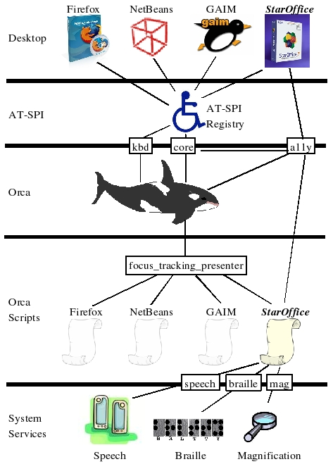

Orca Documentation Series
Sun Microsystems, Inc.
- Table of Contents
- Orca User Experience Design
- Foreword
- 1. Introduction
- 2. Personas
- 2.1. Lee the Programmer
- 2.2. Pat the Manager
- 2.3. Kim the Admin
- 2.4. Sam the IT Guru
- 3. User Requirements and Functional Description
- 3.1. Availability at All Times
- 3.2. Failure Resiliency
- 3.3. Seamless Interaction with Traditional Keyboard Navigation Methods
- 3.4. Seamless Interaction with Other Assistive Technologies
- 3.5. Consistent Style
- 3.6. Customizable Behavior Per Application ("Scripting")
- 3.7. Support for Script Writers
- 3.8. Usable Access to Key Office Productivity Applications
- 3.9. Configurable Presentation and Interaction
- 3.10. Focus Tracking as the Default Mode
- 3.11. Flat Review Mode
- 3.12. Presentation of Text Attributes
- 3.13. Learn Mode (Command Echo)
- 3.14. Customizable Gestures
- 3.15. "Where Am I?" Command
- 3.16. "Jump to Well Known Object" Commands
- 3.17. "Find" Command
- 3.18. Watched Objects
- 3.19. Bookmarked Objects
- 3.20. Document Reading
- 3.21. Ability of Non-focused Windows to Present Information
- 3.22. Speech Synthesis
- 3.23. Key and Word Echo
- 3.24. Refreshable Braille
- 3.25. Synchronization with Screen Magnifiers
- 3.26. Acceptable Response Time
- 3.27. Documentation and Tutorials
- 4. Default Interaction Styles
- Bibliography
- Orca Architecture and Functional Specification
- Foreword
- 1. Introduction
- 2. Prerequisites
- 2.1. GNOME 2.14 or better
- 2.2. Python v2.4 or better
- 2.3. pyorbit v2.14.0 or better
- 2.4. libbonobo v2.0.0 or better
- 2.5. gnome-python-2.0 v2.6.0 or better
- 2.6. pygtk-2.0 v2.4.0 or better
- 2.7. AT-SPI v1.6.6 or better
- 2.8. gnome-speech v0.3.9 or better
- 2.9. BrlTTY v3.7.2 or better
- 2.10. gnome-mag v0.11.11 or better
- 2.11. Keyboard Navigation
- 3. Architecture and Implementation
- 3.1. Desktop and AT-SPI
- 3.2. Orca
- 3.3. Orca Scripts
- 3.4. System Services
- 4. Internationalization (I18N) Support
- Bibliography
- Orca Script Writing Guide
- Orca Testing Plan
- Foreword
- 1. General Orca Functionality
- 1.1. Interaction with Other ATs
- 1.2. Flat Review
- 1.3. Learn Mode
- 1.4. Where Am I?
- 1.5. Say All
- 1.6. Verbalized Punctuation
- 1.7. Verbalized Links
- 1.8. Verbalized Caps
- 1.9. Spelling Mode
- 1.10. Text Attributes
- 1.11. Key and Word Echo
- 1.12. Braille
- 2. Specific Office Productivity Applications
- 2.1. Desktop Test Plan
- 2.2. Nautilus Test Plan
- 2.3. gnome Calc Test Plan
- 2.4. GEdit Test Plan
- 2.5. Evolution E-Mail Test Plan
- 2.6. Evolution Calendar Test Plan
- 2.7. Evolution Contact Manager Test Plan
- 2.8. GAIM Test Plan
- 2.9. Yelp Test Plan
- 2.10. StarOffice Writer Test Plan
- 2.11. StarOffice Calc Test Plan
- 2.12. StarOffice Impress Test Plan
- 2.13. Firefox 2 Test Plan
- 2.14. Firefox 3 Test Plan
- 2.15. Adobe Acrobat Reader Test Plan
- 2.16. Java Platform Test Plan
- Orca User's Guide
- Table of Contents
- Foreword
- 1. Introduction
- 2. Personas
- 2.1. Lee the Programmer
- 2.1.1. Write code in NetBeans
- 2.1.2. Compile code in NetBeans
- 2.1.3. Compose document in StarOffice
- 2.1.4. Read and write e-mail with Evolution
- 2.1.5. Use terminal windows
- 2.1.6. Use the calendar tool
- 2.1.7. Browse the web using Mozilla
- 2.2. Pat the Manager
- 2.2.1. Browse the web using Mozilla
- 2.2.2. Read and write e-mail with Evolution
- 2.2.3. Compose presentation in StarOffice
- 2.2.4. Read help documentation
- 2.2.5. Compose text document in StarOffice
- 2.2.6. Use address book
- 2.2.7. Use the calendar tool
- 2.3. Kim the Admin
- 2.3.1. Use the address book
- 2.3.2. Use the calendar tool
- 2.3.3. Browse the web using Mozilla
- 2.3.4. Read and write e-mail with Evolution
- 2.3.5. Creates spreadsheet in StarOffice
- 2.4. Sam the IT Guru
- 2.4.1. Use terminal windows
- 2.4.2. Use GUI-based administration tools
- 3. User Requirements and Functional Description
- 3.1. Availability at All Times
- 3.2. Failure Resiliency
- 3.3. Seamless Interaction with Traditional Keyboard Navigation Methods
- 3.4. Seamless Interaction with Other Assistive Technologies
- 3.5. Consistent Style
- 3.6. Customizable Behavior Per Application ("Scripting")
- 3.7. Support for Script Writers
- 3.8. Usable Access to Key Office Productivity Applications
- 3.8.1. Functional Description and Status
- 3.8.2. Firefox details
- 3.8.3. Verbalized Links spec
- 3.9. Configurable Presentation and Interaction
- 3.10. Focus Tracking as the Default Mode
- 3.11. Flat Review Mode
- 3.12. Presentation of Text Attributes
- 3.13. Learn Mode (Command Echo)
- 3.14. Customizable Gestures
- 3.15. "Where Am I?" Command
- 3.16. "Jump to Well Known Object" Commands
- 3.17. "Find" Command
- 3.18. Watched Objects
- 3.19. Bookmarked Objects
- 3.20. Document Reading
- 3.21. Ability of Non-focused Windows to Present Information
- 3.22. Speech Synthesis
- 3.23. Key and Word Echo
- 3.24. Refreshable Braille
- 3.25. Synchronization with Screen Magnifiers
- 3.26. Acceptable Response Time
- 3.27. Documentation and Tutorials
- 4. Default Interaction Styles
- Bibliography
- List of Tables
- 3-1. Office Productivity Applications
Foreword
Orca is a flexible, extensible, and powerful assistive technology that provides end-user access to applications and toolkits that support the AT-SPI (e.g., the GNOME desktop). With early input from and continued engagement with its end users, Orca has been designed and implemented by the Sun Microsystems, Inc., Accessibility Program Office.
NOTE: Orca is currently a work in progress. As a result, this and other books in the Orca Documentation Series are under continuous modification and are also in various states of completeness.
This book covers the design of the user experience for Orca.
Chapter 1. Introduction
The design of Orca is centered primarily on the requirements of its end users. Orca's users may require non-visual access methods such as speech and/or braille and they may also require alternative visual access methods such as magnification.
When designing Orca, its authors at Sun Microsystems engaged the user community from the start, soliciting feedback on questions such as the following:
What tasks do users want to accomplish?
How do users accomplish these tasks?
What should the screen reader present to users?
What is the user experience like?
This book covers the user design of Orca, ranging from a poetic use of Cooper's "Persona" concept [cooper99> ] to the development of the end user requirements and default interaction styles for speech synthesis, braille, magnification, and input devices.
Chapter 2. Personas
The Orca user personas are intended to be a tool that helps elicit use cases and user requirements. The approach is to think of "real" users with specific disabilities performing specific actions. These personas are meant to cover a range of typical users, both in the tasks they want to accomplish as well as their disabilities. The Orca user design explored four personas, each of which is discussed in the following sections:
Lee: a programmer who uses braille
Pat: a manager who uses magnification and speech
Kim: an administrative assistant who uses speech
Sam: an IT staff member who uses speech and braille
2.1. Lee the Programmer
Lee is a programmer who is primarily a braille user and typically performs the tasks outlined in the following sections.
2.1.1. Write code in NetBeans
Lee edits a program module in NetBeans. Over the course of this editing, Lee must be able to do the following:
Determine proper indenting. On the braille display, Orca shows this by using blank spaces. Orca also has an option to compress horizontal spacing so as to better make use of braille real-estate.
Lee sometimes uses speech as well, and uses separate commands to have Orca read the indentation level. When in focus tracking mode, Lee also has the option to turn on the automatic speaking of this information.
See highlighting, attributes and coloring. On the braille display, Orca shows this in status cells, where the status cells reflect the attributes of the character under the current cursor position. For braille displays without status cells, attribute information is shown using dots 7 and 8, where a "key on the braille display" is used to cycle through the various attribute types (underline, bold, etc.).
Navigate to and activate buttons and other controls with the braille display, especially those that cannot gain focus using native keystrokes. For example, some code completion and information windows may not have this ability. Lee uses functions to quickly move the braille display to various parts of the screen such as "top of screen" or "line 6." This is typically done under flat review mode, and Lee uses the panning and navigation keys on the braille display to do this.
When Lee presses touch cursors on the braille display, they behave as if a Lee were performing a single left mouse click on the given object associated with the touch cursor.
Monitor an object on the screen. When Lee tells Orca to monitor an object by pressing a key in combination with cursor routing buttons on the braille display Orca will reserve an area on the braille display and will continually display all current information for this object.
Set a part of the screen to jump to, such as a status bar. When Lee lands on an object of interest, Lee will instruct Orca to reserve a keystroke by pressing a key and a touch cursor on the braille display to jump back to the object without moving the active focus. Since Lee is a braille user, Orca also allows Lee to jump to these objects by pressing a combination of a braille display key and touch cursor to jump to a bookmark (e.g., cursor 1 goes to bookmark 1).
2.1.2. Compile code in NetBeans
Lee compiles a program module and fixes errors in NetBeans. Over the course of this task, Lee must be able to do the following:
See all errors and warnings. For example, when Lee compiles a program module, focus will be moved to a window containing errors and warnings. Focus tracking should behave properly here, and the braille display will show the first line in the errors and warnings window.
When Lee has speech enabled, Orca will speak the first line of the message window.
Click on an error with a touch cursor to go to the error. This acts just like performing a left mouse click on the error to take Lee to the editor window and source line for the error. Focus tracking behaves properly here, and the braille display will show the line containing the error.
When reviewing the screen, Orca compresses white space on the braille display to allow Lee to review it more quickly. For example, when there are only blanks to the right and Lee presses the pan-right button on the braille display, Orca will take Lee to beginning of the next non-blank line. Orca also indicates positional information by displaying optional "beginning of line" and "end of line" characters which are standard well known characters on the braille display. Orca also optionally shows vertical screen position in status cells. Orca also optionally plays sound effects to indicate line changes.
Run the application being created and access it. General screen reading functionality applies here.
2.1.3. Compose document in StarOffice
Lee writes rough draft of an architecture document in StarOffice. Over the course of this editing, Lee must be able to do the following:
Detect text selection. When Lee selects text in the document, Orca uses dots 7 and 8 on the braille display to indicate the text selection. Note that this will hide any capitalization held in dot 7, but that's OK.
Use spellcheck to determine misspelled word and read list of possible replacements. NOTE: Lee wants to be able to see both the spellcheck dialog and the misspelled word in context. When spellcheck dialog comes up, Orca provides a well known command to say "read the word in its context". Speech will speak it. Braille will display it, and any other action snaps Lee back to the spellcheck dialog.
Read documents in grade two braille. Lee uses a well known command to toggle between grade one and grade two braille.
Detect attributes of text. Lee does this in the same way as described in "highlighting, attributes and coloring" above.
Easily comprehend tabs and spacing. Less does this in the same way as described in "determine proper indenting" above.
Bring up a list of toolbar items to quickly access with the keyboard. For example, some applications are well-behaved and let you move to the toolbar. Others do not. Orca provides a well known command that takes Lee to toolbar navigation mode. Another well known command (e.g., escape) gets you out of this mode.
NOTE: this may also be workable via review mode, but the screen reader always attempts to provide Lee with the most efficient means for accomplishing any task.
Review the currently visible window with the braille display without moving the active cursor (e.g., the caret or the object with focus). Lee uses Orca's flat review mode to do this, and Orca's flat review mode also allows Lee to select an object (and caret position in that object, if caret position applies).
Navigate and read all prompts and controls (including static text) in dialogs such as "Save as..." both in flat review mode and in logical order.
View labels on the same line as the control they refer to followed by the control type. NOTE: Orca automatically does this in braille when in focus tracking mode, but will not do this when in flat review mode.
Obtain "where am I" info. In focus tracking mode, Orca's braille display always tells Lee this (e.g., it displays "file open dialog, filename text area, role" on the braille display - see the braille specification document for more information). Updates to text areas cause automatic panning of braille so as to keep as much of text area on display as possible, with weight given to the caret.
2.1.4. Read and write e-mail with Evolution
Lee reads and writes e-mail with Evolution to communicate with team. Over the course of this task, Lee must be able to do the following:
Read all e-mail formats (e.g., plain text and html). Orca relies on Evolution to give it the proper AT-SPI object information for this.
Track the message list and easily be able to determine such info as time, date and message priority. Orca places all this information on one line of the braille display if at all possible.
Spellcheck an outgoing message as described above.
See autocompletion information as it is appearing. Orca displays this information to Lee on the braille display and keeps the cursor at the current caret position.
When Lee has speech enabled, the speech output also speaks the autocomplete values.
2.1.5. Use terminal windows
Lee also interacts with terminal windows on a daily basis. While BrlTTY is most likely the better solution for Lee (who is primarily a braille user), Lee may also want to access a GUI terminal on occasion. Lee needs to be able to do the following:
Navigate the terminal window. Orca updates the braille display to track the cursor in apps such as emacs and vi. Orca also updates the braille display to track the navigation of fields in terminal apps (such as curses applications).
2.1.6. Use the calendar tool
Lee sets up appointment for team design discussion using a calendar tool. Over the course of this task, Lee needs to be able to do the following:
See relevant information about each time slot. Orca uses braille to show this relevant information (e.g., is that slot available and if not, what is scheduled?).
See the prompts for each field when filling out an appointment. Orca displays all information for the current field on the braille display if it will fit. If it will not, Orca supports panning of the braille display. Orca also makes it possible to restrict panning to the braille concept of the current element which means that the user can not pan away from the information about the current control.
2.1.7. Browse the web using Mozilla
Lee uses Mozilla to read JDK JavaDoc, the latest Java Tips and Tricks article, and the latest slashdot content. Lee needs to be able to do the following:
View all links in a list view and also be able to activate them. Orca allows Lee to arrow through the links and hit first letter (or perhaps enter key) to activate them.
Jump past links on the page to get directly to large blocks of text. Orca provides a well known command to do this. This is useful for reading documentation and articles where Lee is reading one page after another.
Select, cut, copy and paste blocks of text from a web page. Orca relies on the semantics of the application to do this.
View the URL of imagemap links with no useful information. Orca provides this as part of one of its navigation modes. Ideally, the browser will allow any user to navigate to any link, thus allowing Orca's focus tracking mode to handle this. If not, however, Orca's flat review mode will provide this functionality.
See labels properly associated with input fields on the braille display; relevant table information should be shown on the display when moving between columns and rows.
Move back and forth between headers (e.g., H1, H2, etc), tables, and frames. Orca relies on the built-in keyboard navigation of Mozilla to do this.
Distinguish links from regular text. Lee does this in the same manner as described in the "highlighting, attributes and coloring" section above.
2.2. Pat the Manager
Pat is a manager who is primarily a magnifier and speech user and typically performs the tasks outlined in the following sections:
2.2.1. Browse the web using Mozilla
Each morning before going to work, Pat uses Mozilla to read the daily news from CNN. To do so, Pat needs to do the following:
Jump past links on the page to get directly to large blocks of text. Orca provides a well known command to do this. This is useful for reading documentation and articles where Pat is reading one page after another.
Select, cut, copy and paste blocks of text from a web page. Orca relies on the semantics of Mozilla to do this.
View the URL of imagemap links with no useful information. Orca provides this as part of one of its navigation modes. Ideally, Mozilla will allow any user to navigate to any link, thus allowing Orca's focus tracking mode to handle this. If not, however, Orca's flat review mode will provide this functionality.
Hear and see links, menu items, and buttons as Pat navigates to them using Mozilla's built-in keyboard navigation methods.
Move back and forth between headers (e.g., H1, H2, etc), tables, and frames. Orca relies on the built-in keyboard navigation of Mozilla to do this.
Distinguish links from regular text. Pat does this in the same manner as described in the "highlighting, attributes and coloring" section above.
Have the document spoken starting from the current position. Orca provides a well known command to to start reading at the current position and stop when desired. Orca also automatically tracks and magnifies the text while it is being read. When reading is stopped, Orca places the caret (if possible) at the end of the last word spoken.
Pat uses Orca's option of using alternative voice styles to indicate various attributes of the text. Orca also provides a well known command to speak all the attributes of the text at the cursor (e.g., "bold underlined 12-point helvetica").
2.2.2. Read and write e-mail with Evolution
Pat is also a heavy e-mail user, especially to communicate with Pat's staff and boss. As such, Pat needs the following:
See and hear the highlighted item in the message list. Orca also gives Pat the ability to hear descriptive information about the currently highlighted item. For example, Pat can determine information such as if the item is unread and/or has an attachment.
Hear and see links, menu items, and buttons as Pat navigates to them using Evolution's built-in keyboard navigation methods.
Have the document spoken starting from the current position. Orca provides a well known command to start reading at the current position and stop when desired. Orca also automatically tracks and magnifies the text while it is being read. When reading is stopped, Orca places the caret (if possible) at the end of the last word spoken.
Pat uses Orca's option of using alternative voice styles to indicate various attributes of the text. Orca also provides a well known command to speak all the attributes of the text at the cursor (e.g., "bold underlined 12-point helvetica").
Change the color of the magnified area. If the full screen is magnified, the entire screen will have the same scheme. If the lens view is on, then only the lens has that color scheme. This is important because Pat sometimes loses the location of the lens and the contrast between the magnified area and rest of the screen helps Pat find it.
See and hear prompts and controls in dialogs. For example, when a search dialog comes up, Pat sees the focused component in the magnified display and hears "subject: edit."
Use one or more well known commands to quickly change magnification level and style. Magnification styles include things such as: magnification lens that moves around display and fixed magnification window that follows mouse and focused object. For following the mouse, Orca also provides additional options such as "mouse centered", "optimal least movement", etc.
Commands to turn magnification tracking on and off.
Use multiple zoomers to track both the "locus of focus" as well as other areas of the screen (e.g., status bar).
2.2.3. Compose presentation in StarOffice
Pat periodically needs to create an "All Hands" presentation in StarOffice. To do, Pat needs the following:
Select from the slide templates. This might require review mode.
Determine the position on the slide that typed text will appear.
Determine if the slide is full or if part of text or an object won't fit.
Cut and paste objects and text from and to a slide.
Move and size objects on a slide.
Determine bullets and indentation levels for text.
Pat sometimes invokes a spreadsheet while writing documents. When doing so, Pat brings up multiple zoomers that place cell location, formulas, etc., in a small area on one of the corners of the screen. Orca allows the location of the zoomers and what the zoomers track to be completely customized.
2.2.4. Read help documentation
Pat needs to be able to read the help documentation, and often needs to do the following:
Navigate the contents magnified and with speech. If a topic has sub-topics Orca makes it clear by speaking so when the topic is highlighted. Speech also tells Pat what level in the help tree Pat is in.
See and hear each content pane. Orca automatically reads each content pain when it gains focus and magnifies each word/line as it is read.
2.2.5. Compose text document in StarOffice
Pat also writes performance reviews in StarOffice. To do so, Pat often performs the following tasks:
Use spellcheck to determine misspelled word and read list of possible replacements. By default, Orca speaks the misspelled word followed by the default choice. NOTE: Pat often wants to be able to see the misspelled word in context. When spellcheck dialog comes up, Orca provides a well known command to say "read the word in its context". Speech will speak it and the magnifier will show it. Any other action snaps Pat back to the spellcheck dialog.
Pat uses Orca's option of using alternative voice styles to indicate various attributes of the text. Orca also provides a well known command to speak all the attributes of the text at the cursor (e.g., "bold underlined 12-point helvetica").
Hear current character, word and line. Orca provides one or more well known commands to do this. When the well known command is pressed a second time, Orca spells the word. When the well known command is pressed a third time, Orca spells the word phonetically.
Hear capitalization. For example, when arrowing across the name "Mike" Orca says 'cap m' 'i' 'k' 'e'. Optionally, Orca changes the pitch for the capital letter.
Bring up a list of toolbar items to quickly access with the keyboard. For example, some applications are well-behaved and let you move to the toolbar. Others do not. Orca provides a well known command that takes Lee to toolbar navigation mode. Another well known command (e.g., escape) gets you out of this mode. NOTE: this may also be workable via review mode, but the screen reader always attempts to provide Lee with the most efficient means for accomplishing any task.
Have dialog static text and focus information should automatically be read if a dialog such as "save" or "print" appears. Orca also provides commands to read this information as well as the entire dialog.
Detect text selection by both seeing the text in the magnifier and also hearing "selected" when navigating character-by-character or word-by-word. Orca also provides a well known command (e.g., "say selection") to read the currently selected text.
2.2.6. Use address book
Pat uses his address book often to locate contact information. To do so, Pat needs Orca to do the following:
Track the address list, speaking and magnifying the currently selected person.
Speak and magnify all controls in the "find" utility as Pat navigates them.
Hear details about an individual contact. When navigating the found contact, Pat needs to hear and see the label and content of each field. Orca also provides a well known command to re-read the current label and roll for the focused item.
2.2.7. Use the calendar tool
Pat sets up a staff meeting using a calendar tool. See Lee's stuff above, but apply to speech and mag.
TODO: need to flesh this out some more.
2.3. Kim the Admin
Kim is an administrative assistant who is primarily a speech user. Kim regularly performs the tasks outlined in the following sections.
2.3.1. Use the address book
Kim often uses the address book to add and find contact information for Pat. As such, Kim needs to be able to do the following tasks:
Track the address list, speaking the currently selected person.
Speak all controls in the "find" utility as Kim navigates them using the system's built in keyboard navigation commands.
Hear details about an individual contact. When navigating the found contact, Kim needs to hear the label, content, and roll of each field. Orca also provides a well known command to re-read the current label and roll for the focused item.
Detect text selection by hearing "selected" when navigating character-by-character or word-by-word. Orca also provides a well known command (e.g., "say selection") to read the currently selected text.
Read the title and status bar of the current application. Orca provides this via a well known command to invoke the "Where am I" functionality of Orca.
2.3.2. Use the calendar tool
Kim often sets up calendar appointment for Pat and others. To do so, Pat needs Orca to provide the following abilities:
Track the date and time views of the calendar. When navigating, Kim hears, for example, the current time and if an appointment is currently set.
TODO: Mike - write down your ideas for this!
Hear the label for each field and review the information that has been input.
Read the entire appointment. Orca provides this via a well known command to read an entire dialog.
2.3.3. Browse the web using Mozilla
Kim often orders office supplies and books travel for others on line. Kim does this in a manner similar to Pat, but using only speech instead of speech and magnification. [[[TODO: - probably need to flesh this out more.]]] In addition, since Kim often fills out forms, Orca needs to allow for the following:
Keystrokes to move between form fields only. Orca provides functionality to move from one form field to the next or prior skipping all other links.
Automatically read field labels when moving to form fields.
2.3.4. Read and write e-mail with Evolution
Kim often coordinates and organizes group meetings using e-mail. As such, Kim needs to be able to do the following:
Hear contacts in the address book and know if they are selected.
Use spellcheck to determine misspelled word and read list of possible replacements. By default, Orca speaks the misspelled word followed by the default choice. NOTE: Kim often wants to be able to hear the misspelled word in context. When spellcheck dialog comes up, Orca provides a well known command to say "read the word in its context". Speech will speak it.
Kim uses Orca's option of using alternative voice styles to indicate various attributes of the text. Orca also provides a well known command to speak all the attributes of the text at the cursor (e.g., "bold underlined 12-point helvetica").
Hear current character, word and line. Orca provides a well known command to do this. When the well known command is pressed a second time, Orca spells the word. When the well known command is pressed a third time, Orca spells the word phonetically.
Hear capitalization. For example, when arrowing across the name "Mike" Orca says 'cap m' 'i' 'k' 'e'. Optionally, Orca changes the pitch for the capital letter.
2.3.5. Creates spreadsheet in StarOffice
Kim sometimes views and updates the group budget, which is maintained as a spreadsheet in StarOffice. To do so, Kim needs to be able to do the following:
Automatically hear cell location and content when navigating between cells. Orca speaks, for example: "B4" followed by the cell content. Orca also provides a well known command to speak this information. Orca also provides an option to automatically speak this information when Kim moves from one cell to the next.
Related to the above, hear row and column headers. Orca supports this via separate well known commands.
Automatically hear formulas if they appear in a cell. Orca speaks these after it speaks the location and content information.
Determine and modify size of cell.
Select a range of cells and know that they are selected. Orca speaks "selected" followed by the begin and end coordinates.
Produce and read simple charts and graphs.
Interact with a print dialog to print finished report.
Automatically hear static text and focus information when a dialog appears such as "file" or "reformat." Orca also provides commands to re-read this information as well as the entire dialog.
2.4. Sam the IT Guru
Sam is a member IT staff who is primarily a speech and braille user. Sam regularly performs the following tasks.
2.4.1. Use terminal windows
Sam regularly interacts with terminal windows. While BrlTTY is most likely the better solution, Sam may also want to access a GUI terminal to do the following:
Navigate the terminal window. Orca updates the braille display to track the cursor in apps such as emacs and vi. Orca also updates the braille display to track the navigation of fields in terminal apps (such as curses apps), and provides a "speak the current line" to display this information.
2.4.2. Use GUI-based administration tools
Sam interacts with GUI-based tools such as update and network configuration on a daily basis. This includes the following:
Automatically hear static text and focus information when a dialog appears such as "configure network." Orca also provides commands to re-read this information as well as the entire dialog.
In logical order, navigate and read all prompts and controls (including static text).
See all information for the current field on the braille display if it will fit. If it will not, Orca supports panning of the braille display. Orca also makes it possible to restrict panning to the braille concept of the current element. This will restrict panning from moving away from the braille information presented for the current control.
Re-read information as requested.
Read an entire dialog with speech.
Watch a particular field in a dialog box (e.g., the "% CPU utilization" field and be notified when it changes.
Chapter 3. User Requirements and Functional Description
Based upon discussions with end users as well as the tasks and ideas from the personas, Orca must supply at least the following end-user features.
3.1. Availability at All Times
Orca will often be the only vehicle by which many users will be able to access the system. As such, it must be available at all times, including at system login and screen-saver screens.
Orca must also be available after the system returns from "standby" or "sleep" mode.
Finally, in the event the user's choice of speech synthesis engine becomes unavailable (e.g., expired license), Orca must attempt to find and use an alternative synthesis engine.
3.1.1. Functional Description and Status
COMPLETE: V0.2.2. LOGIN: Orca will rely upon the accessible login feature of gdm to enable access at login. This feature has been tested and verified on Open Solaris with Orca V0.2.2.
COMPLETE: V0.2.2. SCREEN SAVER: Orca will announce that the "AT Enabled Lock Dialog" is active and you can type your password.
3.2. Failure Resiliency
In the event that Orca fails or a component of the system that Orca depends upon fails, the system should be able to heal (and perhaps restart) itself appropriately.
3.2.1. Functional Description and Status
COMPLETE: V0.9.0. Orca provides a script that will restart Orca in the event of catastrophic failure, and it also periodically pings and restarts Orca if necessary. Furthermore, Orca will also detect hangs inside itself and quit if possible.
3.3. Seamless Interaction with Traditional Keyboard Navigation Methods
Orca must allow users to navigate through the desktop and applications on the desktop using the system keyboard navigation gestures (e.g., Alt+Tab to select the next window). In other words, Orca must not interfere with traditional keyboard navigation.
3.3.1. Functional Description and Status
COMPLETE: V0.2.3. Orca defines keystrokes for the keypad and also makes special used of the "Insert" key as the Orca modifier key. Orca also provides an "orcaModifierKeys" customization setting to allow the user to override the Orca modifier key. This setting contains a list of key strings that represent the key to be used as the Orca modifier key. See the customization section of the Orca User Guide for more information.
COMPLETE: V0.2.2. Furthermore, while the keystrokes generally do not interfere with normal and traditional keyboard navigation techniques built into the desktop, these keystrokes can be overridden and extended if necessary. See the customization section of the Orca User Guide for more information.
3.4. Seamless Interaction with Other Assistive Technologies
It is not uncommon for users to simultaneously use other assistive technologies, such as the AccessX features of XKB [XKB>], to access their displays. As such, Orca must be able to co-exist (i.e., not interfere) with other assistive technologies in use by the user.
3.4.1. Functional Description and Status
COMPLETE: V0.9.0. [OWNER: LMS] Orca has been simultaneously tested with BrlTTY, GOK, and Dasher and AccessX.
3.5. Consistent Style
It is expected that access to applications will be driven primarily via customized "scripts," with a fallback ("default") script to be used in the absence of a customized script.
While each script can provide dramatically different access to an application, it is expected that scripts will provide a users with a consistent style to access applications. To help with this consistent style, Orca will provide a style guide, a well-documented "default" script, and several application scripts that demonstrate and promote this style.
3.5.1. Functional Description and Status
COMPLETE: V0.9.0. Orca currently provides a style guide and a default.py script
3.6. Customizable Behavior Per Application ("Scripting")
It is expected that the default behavior will provide reasonable access to all applications that use the AT-SPI. However, to provide dramatically improved access, Orca must be able to provide customized behavior for individual applications.
For example, one can envision a script for an e-mail application that can provide prioritized access to one's inbox. Another example may be that the script provides keyboard access to select and copy displayed text to the system clipboard in the event the application doesn't support this (e.g., the only way to select text in a terminal window is to use a mouse - a script might create new keybindings to allow a user to do this from the keyboard).
3.6.1. Functional Description and Status
COMPLETE: V0.2.4. Orca provides a framework for both per-application and per-toolkit customized scripts. This framework is documented in the Orca Script Writing Guide.
3.7. Support for Script Writers
Orca will provide tools and utilities to help the script writer. These utilities not only include a library of useful methods to use from scripts, but also runtime tools to help the script writer analyze the system in action.
3.7.1. Functional Description and Status
COMPLETE: V0.2.2. Debug utilities to output AT-SPI and input device events. Managed via several debug level settings in the debug.py module.
COMPLETE: V0.2.2. Debug utilities to record and playback keystrokes. Managed via the separate src/tools/record_keystrokes.py and play_keystrokes.py modules. Keystroke recording can also be enabled by pressing the "Insert+Pause" keys while running Orca itself.
COMPLETE: V0.2.2. Debug utilities to record what is being sent to speech and braille. This is managed via the debug level settings.
COMPLETE: V0.2.7. Keystroke to speak/braille application with focus: Insert+F6.
COMPLETE: V0.2.7. Keystroke to speak/braille the current script (and script class) in use: Insert+F6
COMPLETE: V0.2.7. Keystroke to dump all applications: Insert+F5.
COMPLETE: V0.2.7. Keystroke to dump the ancestors of the object with focus: Insert+F7.
COMPLETE: V0.2.7. Keystroke to dump the widget hierarchy of the application with focus: Insert+F8.
3.8. Usable Access to Key Office Productivity Applications
As needed, Orca will provide custom scripts for key office productivity applications: e-mail, simple text editing, calendaring, contact management, instant messaging, etc.
3.8.1. Functional Description and Status
Orca is targetting the following office productivity applications:
Table 3-1. Office Productivity Applications
| Application Class | Target Application and Version | Status | Test Plan |
|---|---|---|---|
| Desktop | gnome-panel and metacity - GNOME 2.16 | INCOMPLETE: metacity working well, gnome-panel working OK, but the keyboard navigation model needs work. SHOULD DELIVER FOR V1.0. | Desktop Test Plan |
| File System Navigation | Nautilus - GNOME 2.16 | No Script Needed | Nautilus Test Plan |
| Simple Text Editing | GEdit - GNOME 2.16 | COMPLETE: V0.2.2 | GEdit Test Plan |
| Evolution - GNOME 2.16 | COMPLETE: V0.2.2 | Evolution E-Mail Test Plan | |
| Calendar | Evolution - GNOME 2.16 | INCOMPLETE: [OWNER: RNB] month view not done. SHOULD DELIVER FOR V1.1+. | Evolution Calendar Test Plan |
| Contact Management | Evolution - GNOME 2.16 | COMPLETE: V0.2.2 | Evolution Contact Manager Test Plan |
| Instant Messaging | GAIM - GNOME 2.16 | COMPLETE: V0.2.2 | GAIM Test Plan |
| Help | Yelp - GNOME 2.16 | COMPLETE: V0.9.0 via mozilla script. | Yelp Test Plan |
| Document Generation | StarOffice 8 PP3, OpenOffice 2.0.3 (initial); StarOffice 8 PP4, OpenOffice 2.0.4 (better) | COMPLETE: V0.9.0. | StarOffice Writer Test Plan |
| Spreadsheet | StarOffice 8 PP3, OpenOffice 2.0.3 (initial); StarOffice 8 PP4, OpenOffice 2.0.4 (better) | COMPLETE: V0.9.0. | StarOffice Calc Test Plan |
| Presentation | StarOffice 8 PP3, OpenOffice 2.0.3 (initial); StarOffice 8 PP4, OpenOffice 2.0.4 (better) | INCOMPLETE: [OWNER: RNB] SHOULD DELIVER FOR V1.1. | StarOffice Impress Test Plan |
| Web Browsing | Firefox 2.0 (minimal); Firefox 3.0 (better) | INCOMPLETE: [OWNER: LMS] Firefox 2.0 is probably as good as it is going to get. Working with IBM and Firefox team to provide better information via AT-SPI for FF3. - MUST DELIVER FOR V1.1. | Firefox 2 Test Plan |
| Content Viewing | Adobe Reader | INCOMPLETE: [OWNER: MMP] needs work from Adobe. SHOULD DELIVER FOR V1.0 | Adobe Acrobat Reader Test Plan |
| Java platform | Swing toolkit | COMPLETE: V0.9.0. | Java Platform Test Plan |
3.8.2. Firefox details
FF3 should at least provide the following functionality. For character and word navigation, Firefox should honor the standard well known keystrokes such as Left and Right arrows or Ctrl+Left and Ctrl+Right arrows for moving by character and word. When the user reaches the beginning or end of a line they should wrap to the next or previous line. If the user reaches the beginning or end of a frame they should wrap to the next or previous frame.
When up and down arrowing orca should as closely as possible move by line in the web page. If the line contains links, orca should speak the word "link" after the link. If possible, the link should also be underlined with dots 7 and 8 on the braille display.
If the line contains form controls, the label for the control should be read followed by the role. If the role is a text entry area and the user has placed the cursor at the location where text can be entered, the user should also hear "editable". The braille user will see the cursor followed by "editable".
When tabbing and shift tabbing between elements the user should hear the element followed by the role. If a user encounters a combo he/she should be able to press "space" to expand the control in order to make a selection. When space is pressed again to make the selection the control will close allowing the user to continue moving through the page.
If tab or shift+tab is pressed while a control is opened, it will be closed and focus will move to the next element.
Check boxes and buttons will simply be toggled by space as they are in any other application.
The letters "h" and "Shift+h" will be used to move between headings. When the heading is reached, orca will speak and braille the header followed by "heading and the heading level. The numbers 1 through 6 will also be available to allow the user to move to the next heading at that level.
The letters "t" and "Shift+t" will be used to move between tables. When the table is reached its title will be spoken as well as the value of the cell with focus. Ctrl+Alt+{Left,Right,Up,Down} will be used to move from cell to cell. Ctrl+Alt+{Home,End} will be used to move between the beginning and the end of the current table. When changing column or row, the appropriate headings should also be read.
The letters "f" and "Shift+f" will be used to move between form fields.
The letters "l" and "Shift+l" will allow the user to move from list to list.
The letters "u" and "v" will be used to move between unvisited and visited links.
The letters "o" and "Shift+o" will be used to move between large objects. Large objects can be things such as: headings, paragraphs, and tables. For this feature, links and form controls will not be considered large objects.
3.8.3. Verbalized Links spec
When moving between lines in an office document and the line contains one or more links orca should speak the word link after the link. If the "link" voice is specified, the link should be read using the link voice. This functionality should also be available in "say all" mode. In braille the link should always be underlined using dots 7 and 8. If the user moves by character or word, the word "link" will not be repeatedly spoken. If the user double presses insert+f to get detailed information on a character they will be informed that the character is part of a link.
3.9. Configurable Presentation and Interaction
Different users have different capabilities (e.g., some may be able to hear some synthesis voices better than others; some may use braille while others do not) and desires (e.g., some may prefer faster speaking rates). As such, the general manner and means by which Orca presents information to the user must be configurable by the end user.
Users must also be able to change configuration settings while Orca is running, including the ability to turn presentation modes (i.e., speech, braille, magnification) on or off without the need to restart Orca.
3.9.1. Functional Description and Status
COMPLETE: V0.9.0. Orca provides both text-based and GUI-based configuration mechanisms.
3.10. Focus Tracking as the Default Mode
Known as "focus tracking," Orca must provide a mode to track the current region of interest, which is usually the object that has keyboard focus.
When first starting up and when the region of interest has changed, Orca must provide a short summary of the region of interest, and must also provide a mechanism for the user to obtain more detailed information. The presentation will follow the style guide.
When navigating text areas in a character-by-character or word-by-word fashion (or any linear fashion for that matter), Orca must provide an option to play an audio cue when the caret crosses line boundaries. This will be looked at in a future release.
3.10.1. Functional Description and Status
INCOMPLETE: does not provide audio cues when crossing linear boundaries. SHOULD DELIVER FOR V1.1+.
3.11. Flat Review Mode
Orca must provide the ability for a user to review the contents of the desktop or a given application. This is typically done by the user making a well known command indicating "review," with Orca reacting by presenting the area to be reviewed. At any time, the user can interrupt the review mode, causing presentations such as speech output to stop immediately.
Another option for review mode includes the ability to use a set of well known commands to quickly skim the contents of the display.
Play audio cues across line boundaries.
In addition, when in flat review mode, Orca will optionally allow the mouse to follow the object of interest. This will be added in a future release.
The review of the desktop will follow the style guide, and will at least provide a short summary of the available applications. While the review of an application will also follow the style guide, the overall presentation depends largely upon the application being reviewed.
TODO: MOVE TO SCRIPT WRITING UTILITIES and do post V1.0. Add notions of "hierarchical review," and "hybrid review (e.g., in/out of lists)". Need to flesh out the primary purposes of each.
3.11.1. Functional Description and Status
COMPLETE: V0.2.2. General flat review is working well.
INCOMPLETE: [OWNER: WDW] no automatic reading of dialogs from current position or from top left. SHOULD DELIVER FOR V1.1.
INCOMPLETE: no audio cues when navigating across line boundaries. SHOULD DELIVER FOR V1.1.
3.12. Presentation of Text Attributes
For any given piece of text, Orca must provide the ability to speak the following text features:
Attributes - font size, face (bold, italic, etc.), underline, color, etc.
Capitalization - is it capital or lower case?
Selection - is the text selected or not?
Justification - left, fill, center, right
Indentation - what is the indentation level?
Bounds - what is the bounding box of the text (where and size)?
3.12.1. Functional Description and Status
INCOMPLETE: text attributes ('indent', 'underline', 'strikethrough', 'justification', 'style', 'size', and 'family-name') are spoken when the user presses Insert+f, but they are not presented on the braille display.
INCOMPLETE: capital letters are spoken with a different voice, but 'verbalized' capitalization (e.g., "capital m") has not been implemented.
INCOMPLETE: the user is notified when they select text, but they are not notified if they navigate to selected text.
INCOMPLETE: there is no option to present text bounds to the user.
INCOMPLETE: there is no option to present text bounds to the user.
INCOMPLETE: When autocomplete appears when a user is typing he or she is not alerted to the fact that this information has appeared. As soon as the information pops up the first option should be spoken/brailled. If the user continues typing and the first choice changes this should also be spoken. It is not expected that the user would hear all possibilitys just the first. If the user can arrow up or down through choices orca should track this as in any other list or combo. It is okay if this information overrides the typing echo.
COMPLETE: The user should be able to dinamically set a row or column as a header in openoffice calc. The hot keys for defining this will be insert+r for row and insert+c for column. In order to set a row or column the user should first set focus to the row or column that they wish to define and then press the appropriate hot key. Once the user has defined a row or column it will be used to first speak this header when moving between rows or columns. This will behave similar to the way orca reads headers in the evolution mail list when moving focus from column to column. For example, if row c is defined as headers the appropriate cell will first be read before reading the cell with focus when the column is changed. If a row or column is already set, double pressing the row or column definition on that row or column will unset it as a dinamic header.
3.13. Learn Mode (Command Echo)
Orca must provide a feature that optionally presents the command to be invoked when the user presses a key on the keyboard or braille display. All key events in this mode will be consumed by Orca, thus allowing the user to freely type anything to learn what the effect of the key will be. A command being spoken must be able to be interrupted at any time.
3.13.1. Functional Description and Status
COMPLETE: V0.2.2. Insert+F1 brings up learn mode and Escape exits it.
3.14. Customizable Gestures
While Orca will provide a default set of well known keyboard and braille input gestures, users must be able to override these gestures and extend them with gestures of their own choosing.
The user interface for defining these gestures must be easy to use.
3.14.1. Functional Description and Status
INCOMPLETE: the current way to define these is by manually editing the user-settings.py or orca-customizations.py file. MUST DELIVER FOR V1.1.
3.15. "Where Am I?" Command
Orca will provide a means for a user to determine information about the current object of interest, including the object itself, which window it is in, which application, which workspace, etc.
The object of interest can vary depending upon the mode the user is using at the time. For example, in focus tracking mode, the object of interest is the object with keyboard focus. In review mode, the object of interest is the object currently being visited, whether it has keyboard focus or not.
3.15.1. Functional Description and Status
COMPLETE: V1.0. Orca provides top down "Where am I" functionality when the user presses the KP_Enter key. Orca should also present bottom-up "Where am I" when double pressing KP enter.
There will be four commands related to "Where am I":
Basic information: Single Press of KP_Enter
Detailed information: Double Press of KP_Enter
Title bar: Single Press of Insert+KP_Enter
Status bar: Double Press of Insert+KP_Enter
3.15.1.1. Basic Information: Single Press of KP_Enter
When KP_Enter is pressed a single time, Orca will speak and display basic information in a specific order about the item with focus. In particular:
Checkboxes present the following information (an example is "Enable speech, checkbox checked, Alt E"):
label
role
state
mnemonic (i.e. Alt plus the underlined letter), if any
Radio Buttons present the following information (an example is "Punctuation Level, Some, Radio button, selected, item 2 of 4, Alt M"):
group name
label
role
state
relative position
mnemonic (i.e. Alt plus the underlined letter), if any
Comboboxes present the following information (an example is ""Speech system: combo box, GNOME Speech Services, item 1 of 1, Alt S"):
label
role
current value
relative position
mnemonic (i.e. Alt plus the underlined letter), if any
Spin Buttons present the following information (an example is "Scale factor: spin button, 4.00, Alt F"):
label
role
current value
mnemonic (i.e. Alt plus the underlined letter), if any
Push Buttons present the following information (an example is "Apply button, Alt A"):
label
role
mnemonic (i.e. Alt plus the underlined letter), if any
Sliders present the following information (examples include "Pitch slider, 5.0, 56%"; "Volume slider, 9.0, 100%"):
label
role
value
percentage (if possible)
mnemonic (i.e. Alt plus the underlined letter), if any
Menu items present the following information (examples include "File menu, Open..., Control + O, item 2 of 20, O", "File menu, Wizards Menu, item 4 of 20, W"):
Name of the menu containing the item, followed by its role
item name, followed by its role (if a menu) followed by its accelerator key, if any
relative position
mnemonic (i.e. Alt plus the underlined letter), if any
Tabs in a Tab List present the following information (an example is "Tab list, braille page, item 2 of 5"):
role
label + "page"
relative position
mnemonic (i.e. Alt plus the underlined letter), if any
Text boxes present the following information (an example is "Source display: text, blank, Alt O"):
label, if any
role
contents
if no text on the current line is selected, the current line
if text is selected on the current line, that text, followed by "selected"
if the current line is blank/empty, "blank"
mnemonic (i.e. Alt plus the underlined letter), if any
Tree Tables present the following information (an example is "Tree table, Mike Pedersen, item 8 of 10, tree level 2"):
label, if any
role
current row (regardless of speak cell/row setting)
relative position
if expandable/collapsible: expanded/collapsed
if applicable, the level
Given the nature of OpenOffice Calc, Orca should override the default KP_Enter behavior when the item with focus is a cell within Calc. In this instance, the following information should be spoken/displayed:
"Cell"
the cell coordinates
the cell contents:
if the cell is empty, "blank"
if the cell is being edited AND if some text within the cell is selected, the selected text followed by "selected"
otherwise, the full contents of the cell
3.15.1.2. Detailed Information: Double Press of KP_Enter
When KP_Enter is pressed twice quickly, Orca will speak and display the information it currently does when performing the "Where am I" command, with the following changes:
Orca should pause briefly between items in the hierarchy
Information regarding relative position should come after the item it pertains to, rather than before. (e.g. say/display "Euro Converter, Item 7 of 9")
If focus is within a text box and text within that text box is selected, Orca should NOT read the current line. Rather, it should state the text that is selected followed by stating "selected".
3.15.1.3. Title bar: Single Press of Insert + KP_Enter
When Insert + KP_Enter is pressed a single time, Orca will speak and display the following information:
The contents of the title bar of the application main window
If in a dialog box within an application, the contents of the title bar of the dialog box.
Orca will pause briefly between these two pieces of information so that the speech user can distinguish each.
Calc-Specific Handling: If Insert+KP_Enter is pressed a single time while focus is on a cell within OpenOffice Calc, Orca will speak the following information:
The contents of the title bar of the application main window
The title of the current worksheet
Note that if the application with focus is Calc, but a cell does not have focus, the default behavior should be used.
3.15.1.4. Status bar: Double Press of Insert + KP_Enter
When Insert+KP_Enter is pressed twice quickly, Orca will speak and display the contents of the status bar. In applications where the status bar contents are distinguishable elements (e.g. OpenOffice Writer), Orca should pause briefly between elements. In applications where the elements of the status bar are labeled (e.g. OpenOffice Writer), Orca should also speak and display the label of a given element followed by that element. (e.g. "Page Style: Default", "Zoom: 100%")
3.16. "Jump to Well Known Object" Commands
There are common locations a user wants to jump to at any given time. These include the title bar, the status bar, the toolbar, the beginning of a window, the end of a window, the system applet tray, etc. Orca will provide well known commands for Orca to enter review mode and set the current well known object to one of these objects. From this point, the user can use a well known command to go back to the object with focus, give the jumped-to object focus if possible, or perform the equivalent of a mouse click on the jumped-to object.
3.17. "Find" Command
Orca will allow users to enter a string to search for a visible text string in the current window or entire desktop. The keystroke to invoke this dialog will be: (KP_Delete). If the string is found (e.g., the string matches the accessible name of an object or the string matches a string in a text area), Orca will switch to "review mode" and make the associated object the object of interest. From this point, the user can use a well known command to go back to the object with focus, give the found object focus if possible, or perform the equivalent of a mouse click on the found object. This feature should also support (shift+KP_Delete) to search backword.
In the event the user is a magnification user, the magnifier will moved to the found object.
The search will be performed in the text flow of the locale (e.g., left-to-right, top-to-bottom) from the current point of interest or optionally from the top of the window, wrapping back to the beginning of the window if necessary.
The search will provide options for requiring a full word match (e.g., "ok" will not match "token") or substring match (e.g., "ok" will match "token").
Finally, the "find" command will also allow the user to search for text based on attribute (e.g., "bold"), and the search will allow the user to search based solely on attribute type, text string, or a combination of both.
The dialog will appear as follows; The first control will be the edit field to type the string to be found. The second will be a group of radio buttons to specify if the search is to be performed from the top or from the current position. The third control will be a check box to determine if the search is case sensitive or not. This will be followed by "find" and "cancel".
NOTE: this feature is for searching for visible text only. Traditional searching for text in documents will be supported by application functionality (e.g., the "search" menu item in the application.
3.18. Watched Objects
Orca will allow users to indicate interest in an object. Once interest has been given, Orca will notify the user of changes to that object, whether it or its window has focus or not. Orca will also provide an option to automatically enter review mode and make the watched object the object of interest. From this point, the user can use a well known command to go back to the object with focus, give the watched object focus if possible, or perform the equivalent of a mouse click on the watched object. A watched object should not be restricted to the screen. For example, a user may want to set a particular cell in a spreadsheet as a watched object. The user may not care if this cell is visible or not. The user will press insert+w to move to the watched object and press numpad dash to return to the focus position keeping with the method of exiting flat review. The user will double press insert+w to actually set a watched object.
In the event the user is a magnification user, the magnifier will moved to the found object. Alternatively, the user may have set up a separate "zoomer" to watch the object. In this case, the zoomer will always reflect the current state of the watched object.
3.19. Bookmarked Objects
Orca will allow users to define a gesture (keyboard or braille) that will tell Orca to enter review mode and make a particular object the object of interest. From this point, the user can use a well known command to go back to the object with focus, give the bookmarked object focus if possible, or perform the equivalent of a mouse click on the bookmarked object.
In the event the user is a magnification user, the magnifier will moved to the bookmarked object.
NOTE: if the specified bookmarked object is not in the window with focus, it is not a requirement to jump to the bookmarked object.
3.20. Document Reading
When the user navigates the document using document navigation techniques, caret movement should always be spoken with the appropriate context (e.g. character, word, line) depending upon why the caret moved.
Orca must provide the ability for a user to read the contents of a document, such as e-mail or a word processing document. As the document is read, Orca will instruct the associated application to scroll so as to keep the portion being read visible on the screen (and magnifier). The invocation of the document reading will be triggered via a well known command and may be stopped at any time by the user. When the review stops, the caret will be positioned at the end of the last word spoken (if possible - this depends upon the capabilities of the text area as well as the speech engine).
Orca will also provide options to highlight the text being spoken.
NOTE: while the reading of a document will follow the style guide, the overall presentation depends largely upon the document being read (e.g., is it a text document, spreadsheet, web page, etc.?).
3.20.1. Functional Description and Status
COMPLETE: V0.9.0. Reading works well, including setting the caret position when speech is interrupted.
INCOMPLETE: text is not highlighted, nor is there an option to do so. DELIVER FOR V1.1+.
INCOMPLETE: audio cues not played when auto reading across line boundaries. SHOULD DELIVER FOR V1.1.
3.21. Ability of Non-focused Windows to Present Information
Orca must allow for the presentation of information of objects that do not have keyboard focus. While the presentation will typically be information on objects that the user has requested interest in, it may also come from custom scripts that have decided it is important for them to present something. Examples of such information include announcing the status of a progress bar, announcing the subject/sender of incoming e-mail, etc.
3.22. Speech Synthesis
One of the primary non-visual ways to present a graphical display to a user is via speech synthesis. Note that Orca need not be a speech synthesizer, but it must be able to drive one. The most important functionality Orca needs for speech synthesis are as follows:
General Synthesis - Orca must be able to speak an utterance (e.g., a word, a label, a sentence, etc.) or set of utterances (e.g., a paragraph or entire document). The utterance being spoken must be able to interrupted at any time.
IMPLEMENTATION DETAIL: if at all possible, the synthesis engine should be able to tell Orca what has been spoken, allowing Orca to synchronize its internal data structures with what has been presented to the user via speech.
Voice Styles - Orca must be able to identify and allow the user to select between the voices available on the various synthesis engines available on the system. In addition, Orca must allow the user to customize parameter settings for the voices, such as average pitch, speaking rate, and volume. The combination of {voice, pitch, rate, volume} will be known as a "voice style." Orca will provide the user with the ability to select the voice styles to be used for various speaking operations (e.g., default, uppercase, warning, alarm, etc.), and may also provide unique "voice style sets" depending upon the navigation mode being used (e.g., focus tracking, review mode, etc.). At a minimum, Orca will support a "default" style to be used for the majority (if not all) of the speaking operations.
Verbalized Caps - When speaking a word beginning with a capital letter, Orca should offer the option of saying "cap" or "all caps" prior to speaking the word in addition to offering an optional uppercase voice. For example, one might hear "cap Willie" or "all caps WILLIE".
Verbalized Links - When speaking a link, Orca should offer the option of saying "link" after to speaking the link in addition to offering an optional hyperlink voice.
Speaking Rate Modification - While the speaking rate will generally remained fixed once configured, users may sometimes which to speed up or slow down the presentation of speech. While it is ideal that user can do this while the synthesis engine is speaking, such functionality is typically not provided by the majority of speech synthesis engines. Orca must, however, allow the user to change the speaking rate that will be used for the next utterance, should the underlying engine support changes to speaking rate.
Multilingual Text - Orca should provide the ability to speak a single utterance that contains words or phrases from multiple locales. This is an emerging area for speech synthesis engines, however, so Orca will support this feature if the underlying engine(s) support it.
Spelling Mode - Orca must be able to optionally spell out words, either letter by letter or by military (e.g., alpha, bravo, charlie) spelling.
Verbalized Punctuation - Orca must be able to optionally verbalize punctuation.
Repeated Character Count - Orca must be able to optionally compress the repetition of character by saying something such as "25 dash characters" instead of "dash dash dash dash dash..."
3.22.1. Functional Description and Status
Verbalized Punctuation Test Plan
COMPLETE: V0.2.2. General synthesis.
COMPLETE: V0.2.2. Voice styles done via ACSS.
INCOMPLETE: Verbalized caps. MUST DELIVER FOR V1.1.
INCOMPLETE: [OWNER: RNB] Verbalized hyperlinks. MUST DELIVER FOR V1.1.
COMPLETE: V0.2.2. Speaking rate modification. Insert+{left,right}_arrow.
INCOMPLETE: Multilingual text. DELIVER FOR V1.1+.
INCOMPLETE: V0.2.7. Letter-by-letter spelling mode of current flat review item performed when user quickly presses KP_5 (word review) or KP_8 (line review) twice in a row. Military spelling will be performed when these keys are pressed quickly 3 times in a row. Military spelling is a MUST DELIVER FOR V1.1.
COMPLETE: V0.2.6. Verbalized punctuation is a settable option.
INCOMPLETE: [OWNER: MMP - further define requirements and functionality] [OWNER: WDW - implementation] Repeated character count. SHOULD DELIVER FOR V1.1.
3.23. Key and Word Echo
Orca must provide a set of options to allow the user to enable the automatic speaking of keys as they are typed, alphanumeric characters as they are entered/deleted, and words as they are entered. The speech much be interruptable at any time.
3.23.1. Functional Description and Status
There are be two main options for selecting key and word echo: key and word. These are not mutually exclusive.
Regardless of any setting, if the user deletes a character using the Backspace or Delete keys, the next or previous visible character will be spoken, depending upon which key was used. If action key echo is enabled (see below), the key causing the deletion should be spoken before the visible character is spoken.
Key echo applies to the entire keyboard and is for echoing keys as they are pressed. The keys are broken into the following groups that the user can optionally enable for echoing:
Alphanumeric and punctuation keys: typing keys that print something on the display, with the exception of space.
Modifier keys: CTRL, ALT, Shift, Insert, and "Fn" on laptops.
Locking keys: Caps Lock, Num Lock, Scroll Lock, etc.
Function keys: The keys at the top of the keyboard.
Action keys: space, enter, escape, tab, backspace, delete, arrow keys, page up, page down, etc.
When a key from any enabled group is pressed, the key will be spoken. In the case where a combination of keys is pressed, the entire combination should be spoken if the group any one of the combined keys has been enabled. For example, if you press Shift+f10 and modifiers are to be spoken but function keys are not the user should hear "shift f ten".
The echoing of alphanumeric and punctuation keys for editable text areas is specialized in that it works with the visible text being edited (e.g., one does not hear the physical keys being typed when a user is entering a password - instead one hears the characters being added or removed from the text area). When typing in editable text areas, the alphanumeric and punctuation key echo behaves as follows: If key echo is enabled, inserted characters caused by typing alphanumeric and punctuation keys will be spoken when they are inserted. IMPLEMENTATION DETAIL: this refers to the total visual change in the text area as the result of a single user action, which may or may not have a simple and direct mapping to the AT-SPI text events.
Word echo applies to editable text areas only, and behaves the following way: If word echo is enabled, words will be spoken when the user enters a visible change that depicts a word boundary (e.g., punctuation, new line, whitespace). Both the word and the boundary character will be sent to speech output, and a separate speech output setting (e.g., verbalized punctuation) will be used to determine whether to speak the boundary character or not.
Furthermore, if either word or alphanumeric key echo are enabled, Orca will provide the following behavior:
If word or alphanumeric key echo are enabled, any single character surrounded by whitespace (including punctuation) will be spoken. For example, if the user has typed "this .", "period" will be spoken when the user inserts a whitespace character.
If word or alphanumeric key echo are enabled, any group of punctuation characters typed in a row will be spoken one at a time when the user inserts a whitespace character.
OPTIONAL: if the user presses the "escape" key in a text area and the text area reverts the text back to what it was, the user should hear this.
COMPLETE: V0.2.4.
3.24. Refreshable Braille
Braille is another primary non-visual presentation mode for screen readers. As with speech synthesis, Orca need not directly support a braille display, but it must be able to drive one. The primary end requirements for a braille display are as follows:
Work with BrlTTY - it is not expected that users will abandon character cell access to their virtual consoles. To preserve this access (which will be done via BrlTTY), Orca will not interrupt or alter the behavior of BrlTTY.
Effective use of space - Orca should try to use the cells on the braille display as effectively as possible. This will be driven primarily by the style guide, and can also include the the option to effectively compress white space.
Effective use of input buttons - Orca should use any input buttons on the display as effectively as possible, with the default behavior being the equivalent effect of the BrlTTY bindings for those buttons. These functions include panning the braille display as well as driving the flat review mode. The functions also include the ability to quickly toggle features on and off, such as: toggle compression of whitespace, toggle attributes to be shown using dots 7-8 or status cells, toggle between grade I and grade II, etc.
Effective use of cursor routing keys - Orca should enable the cursor routing keys to be used to click on objects, set slider values, etc.
In the event there is a second set of cursor routing keys, Orca will attempt to make effective use of them (e.g., pressing them tells Orca to relay text attribute information via speech).
Effective use of input button and cursor routing key combinations - Orca should allow the user to use combinations of input buttons and/or cursor routing keys to perform operations such as selecting text, jumping to bookmarks, etc.
NOTE: selection of text using combined keyboard and braille actions (e.g., holding the shift key while pressing a cursor routing key) may also be considered.
NOTE: input of text using chording of braille keys might be considered, but is not a high priority.
Cursor options - Orca should provide the user with the ability to show the cursor or not. If shown, the user should have the ability to make it blink, and should also have the ability to tell it to either take the entire cell or just dots 7-8.
Ability to have multiple pan regions on the display - watched objects may need to be able to remain on a static area of the display (e.g., the rightmost 10 cells). The braille support should enable this and should also allow the user to pan either the "main" display or the watched area.
3.24.1. Functional Description and Status
COMPLETE: V0.2.2. Work with BrlTTY.
INCOMPLETE: [OWNER: MMP - further define requirements and functionality] [OWNER: WDW - implementation] Effective use of space. Not addressed at all. MUST DELIVER FOR V1.1.
INCOMPLETE: Effective use of input buttons. Does OK for general panning and flat review control, but other functionality not supported. SHOULD DELIVER FOR remainder V1.1.
INCOMPLETE: Effective use of cursor routing keys. Works well for activating components and moving the caret. Second row of cursor routing keys unexplored. SHOULD DELIVER FOR V1.1+.
INCOMPLETE: Key combinations. Not investigated, can be done via traditional keyboard techniques. SHOULD DELIVER FOR V1.1.
INCOMPLETE: Cursor options. Rely upon BrlTTY. DELIVER FOR BrlTTY.
INCOMPLETE: Multiple pan regions. SHOULD DELIVER FOR V1.1.
3.25. Synchronization with Screen Magnifiers
In addition to co-existing with each other, a screen magnifier and Orca must be in sync with each other. For example, when Orca is reviewing an area of the screen that is larger than the screen magnifier can display at once, Orca must inform the screen magnifier that the region of interest has changed.
3.25.1. Functional Description and Status
INCOMPLETE: [OWNER: COMMUNITY] mimimal magnification support is in Orca as of V0.9.0. Need to work with the community to further define what a compelling magnifier experience means. SHOULD DELIVER FOR V1.0 or MUST DELIVER FOR V1.1, depending upon community contributions.
3.26. Acceptable Response Time
Orca must not degrade the perceptible performance of the system. That is, user should be able to detect any decrease is responsiveness of the desktop when the Orca is being used. In addition, a user's interaction with Orca should appear as crisp and as lively as normal interaction with the display via traditional interfaces (e.g., the keyboard).
Acceptable performance of the speech synthesis output is very important. Orca must be able to provide speech synthesis that meets or exceeds the following performance metrics:
Time to First Sound - The time between when a speech synthesizer gets a request to speak and when the synthesizer actually starts speaking must be minimal (e.g., less than 30ms).
Time to Cancel - Orca must be able to cancel speech synthesis in progress, and the time to cancel must be minimal (e.g., less than 30ms). Furthermore, the time between when a cancel is issued and the time the next utterance is to be spoken must be minimal (e.g., less than 30ms).
All updates to the braille display should occur within 50ms of the time the update command was issued.
The magnifier should offer smooth performance and show no visible lag.
3.26.1. Functional Description and Status
 | Performance Scope |
|---|---|
It is understandable that much of the response time may be due to factors outside the control of Orca (e.g., Bonobo and the underlying speech engine). As such, the primary responsibility of Orca and each application script is to process AT-SPI and keyboard events as quickly as possible. |
3.27. Documentation and Tutorials
Although it is a reasonable goal that Orca should attempt to achieve, users cannot be expected to be able set up and use Orca without documentation. Like other systems, such as JAWS, Orca must provide documentation and tutorials on the installation, configuration and use of Orca. This documentation must come in form(s) that are accessible to people who need to use the screen reader (e.g., accessible text and audio).
3.27.1. Functional Description and Status
INCOMPLETE: [OWNER: WDW and COMMUNITY] documents will continually be updated, as will the Orca web site and WIKI.
Chapter 4. Default Interaction Styles
Associated with the discussion of the personas was the notion of a need for consistent and efficient interaction methods for Orca. This notion resulted in the development of default interaction styles for speech synthesis, braille input and output, magnification, and keyboard control of Orca. The following sections describe these default interaction styles in more detail.
4.1. Input Style: Keyboard Mappings
This section describes the default keyboard mappings for the focus tracking and flat review modes of the Orca screen reader. Note that Orca allows these mappings to be overridden and extended, allowing users to define their own keyboard mappings.
As with most other available screen readers, the numeric keypad is the primary location for Orca keystrokes. Where appropriate, the keymap also provides letter-based mnemonics that have been carefully chosen so as to make Orca easier to translate into other languages. Furthermore, the default mappings have been developed with a minimalist approach so as to allow custom scripts to override and extend the default keyboard behavior while reducing conflict with the default keybindings.
Orca will also automatically invoke flat review mode when a command is issued to review any part of the screen that does not have the keyboard focus.
NOTE: Ideally, a screen reader should provide good access on a laptop, which typically means using the numeric keypad is an inconvenient access method. As appropriate, Orca's default keyboard mappings may change to reflect this ideal goal; alternatively, Orca may provide another set of keyboard mappings optimized for laptop use.
In brief summary, the default keyboard mappings break the numeric keypad into the following logical sections:
The top row is for mouse clicks, managing focus, and switching review mode between focus tracking and flat review.
Keypad keys 7, 8, and 9 are for navigating lines
Keypad keys 4, 5, and 6 are for navigating words
Keypad keys 1, 2, and 3 are for navigating characters
In more detail, the keyboard mappings are as follows, and use the "Insert" key as a modifier (see the customization section of the Orca User Guide for more information on how to customize this):
"KEYPAD_/": performs a left mouse click on the current object of interest.
IMPLEMENTATION DETAIL: bound to default.Script.leftClickReviewItem.
COMPLETE: V0.2.2.
"KEYPAD_*": performs a right mouse click on the current object of interest.
IMPLEMENTATION DETAIL: bound to default.Script.rightClickReviewItem.
COMPLETE: V0.2.2.
"KEYPAD_-": when in flat review, returns to the object with keyboard focus (note that any user action that causes the screen or focus to change will also do this). If the user is currently in focus tracking mode, pressing this key activates flat review mode.
IMPLEMENTATION DETAIL: bound to default.Script.toggleFlatReviewMode.
COMPLETE: V0.2.2.
"KEYPAD_+": reads from current position to end of document. If any key is pressed afterwards, reading stops and the appropriate object is given appropriate focus (e.g., the text caret will be placed on the last word spoken). If the user is in a dialog box, pressing this key reads the dialog box in a logical order.
IMPLEMENTATION DETAIL: bound to default.Script.sayAll.
INCOMPLETE: [OWNER: RNB] As of V0.2.5. this is implemented for focus tracking mode but not yet for flat review.
"KEYPAD_ENTER": performs "Where Am I?" If this key is pressed twice quickly, a bottom up presentation of the where am I information is presented. If the user presses insert+KPEnter they will hear any relevant status bar information will be spoken.
IMPLEMENTATION DETAIL: bound to default.Script.whereAmI.
INCOMPLETE: [OWNER: WDW] The "where am I" is implemented in V0.2.5. however pressing twice does not yet give statusbar information.
"KEYPAD_.": performs a "screen find." Pressing this key brings up a dialog where a user can enter a search string and decide where on the screen the search should begin IE from the top or current position.
INCOMPLETE: [OWNER: WDW] SHOULD DELIVER FOR V1.0.
"KEYPAD_7": moves the review position to the prior line, landing on object closest to current object.
IMPLEMENTATION DETAIL: bound to default.Script.reviewPreviousLine.
COMPLETE: V0.2.2.
"INSERT+KEYPAD_7": moves the review position to the home position.
IMPLEMENTATION DETAIL: bound to default.Script.reviewHome.
COMPLETE: V0.2.2.
"KEYPAD_8": speaks current line. If flat review has been activated, this acts on the line at the review location. If the user is in focus tracking mode, the line or item with focus is spoken. When this key is pressed twice quickly the line is read with formatting and capitalization details.
IMPLEMENTATION DETAIL: bound to default.Script.reviewCurrentLine.
COMPLETE: [OWNER: RNB] handles the single press, and the double press. SHOULD DELIVER FOR V1.0.
"KEYPAD_9": moves the review position to the next line.
IMPLEMENTATION DETAIL: bound to default.Script.reviewNextLine.
COMPLETE: V0.2.2.
"INSERT+KEYPAD_9": moves the review position to the end of the review area.
IMPLEMENTATION DETAIL: bound to default.Script.reviewEnd.
COMPLETE: V0.2.2.
"KEYPAD_4": moves the review position to the prior word or item.
IMPLEMENTATION DETAIL: bound to default.Script.reviewPreviousItem.
COMPLETE: V0.2.2.
"INSERT+KEYPAD_4": moves the review position to the word spatially above the current word.
IMPLEMENTATION DETAIL: bound to default.Script.reviewAbove.
COMPLETE: V0.2.2.
"KEYPAD_5": speaks the current word or item. If this key is pressed twice quickly the word is spelled and any capitalization is be announced; three times results in phonetic spelling
IMPLEMENTATION DETAIL: bound to default.Script.reviewCurrentItem.
COMPLETE: [OWNER: WDW] handles the single press, and the double press. MUST DELIVER FOR V1.0.
"INSERT+KEYPAD_5": speaks the accessible containing the current review word.
IMPLEMENTATION DETAIL: bound to default.Script.reviewCurrentAccessible.
COMPLETE: V0.2.2.
"KEYPAD_6": moves the review position to the next word or item.
IMPLEMENTATION DETAIL: bound to default.Script.reviewNextItem.
COMPLETE: V0.2.2.
"INSERT+KEYPAD_6": moves the review position to the word spatially below the current word.
IMPLEMENTATION DETAIL: bound to default.Script.reviewBelow.
COMPLETE: V0.2.2.
"KEYPAD_1": moves the review position to the prior character.
IMPLEMENTATION DETAIL: bound to default.Script.reviewPreviousCharacter.
COMPLETE: V0.2.2.
"INSERT+KEYPAD_1": moves the review position to the end of the line.
IMPLEMENTATION DETAIL: bound to default.Script.reviewEndOfLine.
COMPLETE: V0.2.2.
"KEYPAD_2": speaks the current character. If this key is pressed twice quickly the character is pronounced phonetically (if it is a letter)
IMPLEMENTATION DETAIL: bound to default.Script.reviewCurrentCharacter.
INCOMPLETE: [OWNER: WDW] handles the single press, but not the double press. MUST DELIVER FOR V1.1.
"KEYPAD_3": moves the review position to the next character
IMPLEMENTATION DETAIL: bound to default.Script.reviewNextCharacter.
COMPLETE: V0.2.2.
INSERT+s: toggles speech on and off.
COMPLETE: V0.2.5.
CONTROL+INSERT+space: resets connection to the speech engine as well as reloads all user settings.
COMPLETE: V0.2.5.
INSERT+v: brings up a "quick" verbosity preferences dialog to set preferences that are temporary to the current session (i.e., they are not saved permanently like the Configuration GUI would do). Example settings include whether or not to speak indenting when working with text, speaking capitalization, speak the role of items, speak font information if it changes, speak an entire table line vs. individual cells, etc.
INCOMPLETE: [OWNER: RNB] MUST DELIVER FOR V1.1.
INSERT+RIGHT_ARROW: increases speech rate
IMPLEMENTATION DETAIL: bound to speech.increaseSpeechRate.
COMPLETE: V0.2.2.
INSERT+LEFT_ARROW: decreases speech rate
IMPLEMENTATION DETAIL: bound to speech.decreaseSpeechRate.
COMPLETE: V0.2.2.
INSERT+SPACE: brings up configuration GUI
COMPLETE: V0.2.5.
4.2. Input Style: Braille Mappings
This section describes the default braille mappings for the focus tracking and flat review modes of the Orca screen reader. Note that Orca allows these mappings to be overridden and extended, allowing users to define their own braille mappings.
Where at all possible, the default braille mappings for Orca will map to their equivalent action in BrlTTY. This permits users to have a consistent experience with their braille display when using virtual character-cell consoles on their machine as well as the GUI display.
The braille key functionality includes the following:
Pan left: BRL_CMD_FWINLT
IMPLEMENTATION DETAIL: bound to default.Script.panBrailleLeft.
COMPLETE: V0.2.2.
Pan right: BRL_CMD_FWINRT
IMPLEMENTATION DETAIL: bound to default.Script.panBrailleRight.
COMPLETE: V0.2.2.
Line up: BRL_CMD_LNUP
IMPLEMENTATION DETAIL: bound to default.Script.reviewAbove.
COMPLETE: V0.2.2.
Line down: BRL_CMD_LNDN
IMPLEMENTATION DETAIL: bound to default.Script.reviewBelow.
COMPLETE: V0.2.2.
Beginning of line: BRL_CMD_LNBEG
INCOMPLETE: [OWNER: WDW] SHOULD DELIVER FOR V1.0.
End of line: BRL_CMD_LNEND
INCOMPLETE: [OWNER: WDW] SHOULD DELIVER FOR V1.0.
Top of window: BRL_CMD_TOP_LEFT
IMPLEMENTATION DETAIL: bound to default.Script.reviewHome.
COMPLETE: V0.2.2.
Bottom of window: BRL_CMD_BOT
IMPLEMENTATION DETAIL: bound to default.Script.reviewBottomLeft.
COMPLETE: V0.2.2.
Return to focus: BRL_CMD_HOME
IMPLEMENTATION DETAIL: bound to default.Script.goBrailleHome.
COMPLETE: V0.2.2.
Cursor routing/clicking
Text selection: accomplished by pressing a touch cursor at the beginning and end of the region that the user wishes to select in conjunction with another well known key on the display.
INCOMPLETE: SHOULD DELIVER FOR V1.1.
Set watched area:
INCOMPLETE: SHOULD DELIVER FOR V1.1.
Set Bookmarked area:
INCOMPLETE: SHOULD DELIVER FOR V1.1.
Go to bookmarked area:
INCOMPLETE: SHOULD DELIVER FOR V1.1.
Go to watched area:
INCOMPLETE: SHOULD DELIVER FOR V1.1.
In addition, the following commands will be used to cycle between braille features:
Toggle space compression: BRL_CMD_SLIDEWIN. Toggles whether or not spaces are compressed when navigating with the braille display
INCOMPLETE: [OWNER: WDW] MUST DELIVER FOR V1.1.
Toggle grade two on and off.
INCOMPLETE: SHOULD DELIVER FOR V1.1.
Toggle what attributes if any are displayed.
INCOMPLETE: cannot reliably get dot info from BrlTTY. SHOULD DELIVER FOR V1.1.
Enter verbosity mode: BRL_CMD_PREFMENU.
INCOMPLETE: [OWNER: RNB] MUST DELIVER FOR V1.1.
Toggle keyboard learn mode: BRL_CMD_LEARN
INCOMPLETE: [OWNER: WDW] MUST DELIVER FOR V1.0.
Toggle display style: toggles between the default view, which is the logical presentation of the focus and the contents of the current line.
INCOMPLETE: DELIVER FOR V1.1+.
4.3. Output Style: Speech Synthesis and Braille
This section provides output styles for each relevant Accessible role. TODO: this is a work in progress and will be completed via an iterative prototype process that includes feedback from end users.
4.3.1. General Braille Style
For braille, there are two verbosity levels. The first is a more verbose level for use with larger braille displays and for those users who are not expert with the Gnome desktop environment. The second more brief mode is for those who are using a smaller display or who are expert with the Gnome environment. With braille, Orca should always make an effort to show as much of the actual item with focus as possible, and the user should never be left with a completely blank display unless they are on a blank line in a text editor.
A general style for displaying braille is as follows: the line will be built up of several regions and an attempt will be made to start the most meaningful region at the beginning of the display. In the event that the line is too long for the physical display, the homing position will will apply and the line will be clipped to the left and/or right as appropriate; the user can use the panning actions to view the clipped information. The regions of the line follow a general pattern:
Verbose: context label [value] rolename
Brief: context label [value]
Where:
context is information about the container with focus. Examples include "calculator window," "desktop," "save as dialog," "low disk space alert," etc. TODO: context can be composed of nested contexts (e.g., a page tab in a dialog); we need to decide what the context is (e.g., logical visual grouping of objects?)
label is the label of the object, usually obtained by the name of the object or the text of the label that labels the object. Examples include "File," "OK," "First name:," "Volume:," etc. The label is generally viewed as the most meaningful region.
[value] (optional) is the value of the object, and varies depending upon the object type. For example, "<x>" for a check box, "70%" for a slider, and "Mike Pedersen" for a text field.
rolename is a localized string representing the name of the role of the object. The user can select between full rolenames (e.g., "check box," "menu item," "push button") or abbreviated rolenames (e.g., "chk," "mit," "pbt"). Note that the rolename may also appear in brief mode if the role of the object is not clear from the label and surrounding context.
The braille cursor (e.g., dots 7 and 8 on the braille display) will be used to indicate meaningful information as well. For example, the cursor will indicate caret position in text areas, and the cursor will also be used to indicate the menu item with focus.
Finally, the touch cursors on the display will "do the right thing." When in focus tracking mode, pressing any touch cursor associated with most objects will perform the default action for that object; the obvious exception is text areas, where the touch cursor will move the text caret to that object. TODO: define what happens in flat review - this might move keyboard focus to the object, perform a click, etc.
4.3.2. General Speech Style
For speech, there are two verbosity levels. The first is a more verbose level for use for those users who are not expert with the Gnome desktop environment or those who like to hear more information. The second, more brief mode, is for those who who are expert with the Gnome environment.
TODO: discuss general style.
4.3.3. Output Styles by Role
4.3.3.1. accelerator label (ROLE_ACCEL_LABEL)
An accelerator label is a short string that appears at the end of the text for a menu item (e.g., "CTRL+Z"), and defines the keystrokes that will invoke the action associated with a menu item.
EXAMPLE: gnome-terminal: the "Paste" menu item in the "Edit" menu has an accelerator.
KNOWN ISSUE: It would be nice to be able to get text bounds information for the accelerator text, but this doesn't appear to be possible with the existing implementations.
4.3.3.1.1. Braille
When presented, the accelerator will always be presented after the item it represents and before the marker that separates menu items. The braille text for the accelerator will appear in parentheses with no space before the opening parenthesis. Accelerator labels will only be presented in verbose mode, and will only appear for the item with focus. In the event that there are other things to show (e.g., check buttons or role names), the accelerator will appear to the far right.
Verbose Example: view menu show mumble <x>(CTRL+M) _ zoom in _ ...
Brief Example: view menu show mumble <x> _ zoom in _ ...
4.3.3.2. alert (ROLE_ALERT)
EXAMPLE: gtk-demo: "Dialog and Message Boxes" demo; click on the "Message Dialog" button. The "Information" window that appears is an alert.
KNOWN ISSUE: The AT-SPI makes a distinction between alerts and dialogs. But, it appears as though the role "alert" is applied to just about any dialog.
4.3.3.2.1. Braille
Any window, regardless if it is an alert, dialog, frame, or window, will appear as the context region on the braille line. The context string will consist of the title of the window followed by its role. The remainder of the braille line will consist of information describing the object with focus in the window. The information will follow the presentation rules for the given role type.
In the case of the "alert", the role of the context will be "alert."
Verbose Example: low disk space alert
Brief Example: low disk space alert
4.3.3.2.2. Speech
When a dialog pops up, its title will be spoken followed by relevant static text followed by the active object.
Verbose Example: "low disk space dialog. you only have 10mb of disk space left. please delete some files. OK button.
Brief Example: "low disk space dialog. you only have 10mb of disk space left. please delete some files. OK button.
4.3.3.3. animation (ROLE_ANIMATION)
An animation contains a moving or dynamic image.
EXAMPLE: Unknown.
4.3.3.3.1. Braille
TODO: should this follow a pattern of "label description role" to be more consistent with the generalized style? Yes this would be a good idea.
Verbose Example: animation: Will riding his bike.
Brief Example: animation: Will riding his bike.
4.3.3.3.2. Speech
Orca will say the roll followed by any descriptive information.
Verbose Example: animation: Will riding his bike.
Brief Example: animation: Will riding his bike.
4.3.3.4. arrow (ROLE_ARROW)
An arrow is a 2D directional indicator.
EXAMPLE: Unknown.
KNOWN ISSUE: The AT-SPI does not appear to have a way to determine which way the arrow is pointing.
KNOWN ISSUE: gail/gail/gailarrow.c sets the role to ATK_ROLE_ICON.
4.3.3.4.1. Braille
An arrow will be represented by the direction the arrow is pointing followed by "arrow." Any touch cursor associated with the text will click the arrow. TODO: should the rolename "arrow" appear in brief mode?
Verbose Example: left arrow
Brief Example: up arrow
4.3.3.4.2. Speech
Orca will speak the direction followed by "arrow."
Verbose Example: left arrow
Brief Example: up arrow
4.3.3.5. check box (ROLE_CHECK_BOX)
A check box represents a choice that can be checked or unchecked and provides an indicator for the current state.
EXAMPLE: gnome-terminal: "Edit" -> "Current Profile..."; the "General" tab has a number of check boxes.
EXAMPLE: gtk-demo: "Tree Store" demo. Most table cells are check boxes. KNOWN ISSUE: the AT-SPI tells us these are tables cells, not check boxes.
4.3.3.5.1. Braille
The state of a check box will be represented by "< >" if it is unchecked and "<x>" if it is checked. Any touch cursor associated with the text will click the check box.
Verbose Example: save password: < > checkbox
Brief Example: save password: <x>
4.3.3.5.2. Speech
Orca will sat the label followed by the word "checkbox" followed its state.
Verbose Example: save password checkbox checked
Brief Example: save password checked
4.3.3.6. check menu item (ROLE_CHECK_MENU_ITEM)
A check menu represents a menu item that can be checked or unchecked and provides an indicator for the current state.
EXAMPLE: gnome-terminal: the "View" menu contains check menu items.
KNOWN ISSUE: It appears as though some toolkits allow menu items to have children (see the 'Menus' demo of the gtk-demo application - the radio menu items have sub menus). This needs to be taken into account.
4.3.3.6.1. Braille
All menus items from a single menu will be shown at the same time (see ROLE_MENU). The state of a check menu item will be represented by "< >" if it is unchecked and "<x>" if it is checked. (See also ROLE_ACCEL_LABEL). The touch cursors will result in activating the item.
Verbose Example: show status bar < >(CTRL+B) checkmenu
Brief Example: show status bar <x>
4.3.3.6.2. Speech
Like a checkbox, Orca will say the item followed by the word "checkmenu" followed by its state.
Verbose Example: show status bar checkmenu checked
Brief Example: show status bar checked
4.3.3.7. column header, table column header (ROLE_COLUMN_HEADER, ROLE_TABLE_COLUMN_HEADER)
A column header is a header for a column of data.
EXAMPLE: gtk-demo: "List Store" demo. The headers are table column headers.
4.3.3.7.1. Braille
A column header will be treated like a button (column headers are usually clickable, typically resorting the rows of the associated table), except it will be followed by "column heading" in verbose mode.
Verbose Example: monthly income column heading
Brief Example: monthly income
4.3.3.7.2. Speech
A column header will be treated like a button (column headers are usually clickable, typically resorting the rows of the associated table), except it will be followed by "column heading" in verbose mode.
Verbose Example: monthly income column heading
Brief Example: monthly income
4.3.3.8. combo box (ROLE_COMBO_BOX)
A combo box is a single line item that contains a list of choices the user can select from, and it can also contain editable text.
EXAMPLE: gedit: "File" -> "Open...". Both combo boxes are simple menu combo boxes.
EXAMPLE: gnome-terminal: "Edit" -> "Current Profile..." -> "Effects". The "Image file" combo box has a list in a scroll pane and a SINGLE_LINE EDITABLE text area as children.
EXAMPLE: gtk-demo: "Size Groups" demo. This creates a "GtkSizeGroup" dialog. Each combo box object in this dialog has a menu as its child.
4.3.3.8.1. Braille
The verbose and brief modes will show the label followed by the item followed by the word "combo." If the item is selected, it will be completely underlined with dots 7 & 8 to indicate selection. TODO: what do we do if the item is editable text?
Verbose Example: time zone: GMT-8 pacific combo
Brief Example: time zone: GMT-8 pacific combo
4.3.3.8.2. Speech
The verbose and brief modes will speak the label followed by the item followed by the word "combo." If the item is selected, the word selected will be spoken. TODO: what do we do if the item is editable text? When a combo box has focus and its selection changes, just the new selection will be spoken.
Verbose Example: time zone: GMT-8 pacific combo selected
Brief Example: time zone: GMT-8 pacific selected
4.3.3.9. desktop icon (ROLE_DESKTOP_ICON)
A desktop icon is an iconified internal frame within a desktop pane.
EXAMPLE: Unknown.
4.3.3.11. dialog (ROLE_DIALOG)
A dialog is a top level window with a title and border. TODO: the AT-SPI makes a distinction between alerts and dialogs. But, it appears as though the role "alert" is applied to just about any dialog.
EXAMPLE: gtk-demo: "Dialog and Message Boxes" demo; click on the "Interactive Dialog" button. The "Dialogs" window is a dialog.
EXAMPLE: gtk-demo: "Expander" demo; the "GtkExpander" window is a dialog.
4.3.3.11.1. Braille
Any window, regardless if it is an alert, dialog, frame, or window, will appear as the context region on the braille line. The context string will consist of the title of the window followed by its role. The remainder of the braille line will consist of information describing the object with focus in the window. The information will follow the presentation rules for the given role type.
In the case of the "dialog", the role of the context will be "dialog."
Verbose Example: Editing profile "foo" dialog
Brief Example: Editing profile "foo" dialog
4.3.3.11.2. Speech
When a dialog gets focus, Orca will say the title of the dialog followed by "dialog" followed by the active object.
Verbose Example: Editing profile "foo" dialog. OK button.
Brief Example: Editing profile "foo" dialog. OK.
4.3.3.12. directory pane (ROLE_DIRECTORY_PANE)
A directory pane is a pane that allows the user to navigate through and select the contents of a directory.
EXAMPLE: Unknown.
4.3.3.12.1. Braille
When in a directory pane, it will be treated like a part of a context.
Verbose Example: Open file dialog select file directory pane filename: text
Brief Example: Open file dialog select file filename:
4.3.3.13. icon (ROLE_ICON)
An icon is a small fixed-sized picture typically used to decorate components.
EXAMPLE: desktop: Press Ctrl+Alt+Tab to select the "Desktop." This will give the icons on the desktop focus and you can move between them using the arrow keys.
EXAMPLE: gtk-demo: "Application Main Window" demo. This creates an "Application Window" frame. Click on File->New. This brings up an alert as a child of the gtk-demo application. The name of the alert is "Information." Buried in the widget hierarchy is an icon named "dialog information."
EXAMPLE: gtk-demo: "Dialog and Message Boxes" demo; click on the "Interactive Dialog" button. This brings up a dialog as a child of the gtk-demo app. There is a an icon named "dialog question" in the dialog's hierarchy.
EXAMPLE: gtk-demo: "Stock Item and Icon Browser". This is a big table with four table column header objects and sets of table cell objects. The "Selected Item" panel has the named icon in its hierarchy. NOTE: the first table cell has the icon and text as children table cell objects.
4.3.3.13.1. Braille
The label of the icon (or the component for the icon) will be displayed.
Verbose Example: unread icon
Brief Example: unread
4.3.3.14. image (ROLE_IMAGE)
An image is a picture, typically static.
KNOWN ISSUE: Most push buttons objects appear to implement the Image interface whether they show an image or not. So...the consumer needs to be careful to determine if an image is actually showing or not.
4.3.3.14.1. Braille
The label of the icon (or the component for the icon) will be displayed. TODO: perhaps show accessible name and/or description of the image?
Verbose Example: new england in the fall image
Brief Example: new england in the fall
4.3.3.14.2. Speech
Verbose Example: new england in the fall image
Brief Example: new england in the fall
4.3.3.15. html container (ROLE_HTML_CONTAINER)
EXAMPLE: mozilla.
KNOWN ISSUE: The HTML container is a hierarchy of test objects. Non-links do not get focus, but links do. This presents some difficulties. For example, the first time a container is displayed, focus might be given to a link that is off the screen.
TODO: considerable thought needs to be done here. An idea for links, however, is that their text should be followed by the type of link: "[mailto,ftp,...] link." In addition, it may actually be more beneficial to use sound effects here so as to not interrupt the natural flow of text. That is, it would be better to speak "press [boop] here to send e-mail to Mike" vs. "press here mailto link to send e-mail to Mike."
4.3.3.16. label (ROLE_LABEL)
A label is a short string. It typically labels another object (e.g., a text area), but may be standalone. When it is standalone, it will be considered "static text." Special handling of labels will only be done in the case where they are static text. In these cases, the user will discover the text through review mode.
EXAMPLE: gtk-demo: Bring "Color Selector" demo. This creates a "Color Selection" frame as a child of the gtk-demo app. Click on "Change to above color". This creates a "Changing color" color chooser dialog. The numerical entry fields are spin button objects, each which is LABELED_BY a label.
4.3.3.16.1. Braille
Labels will be presented as "raw" text on the display.
Verbose Example: you are low on disk space
Brief Example: you are low on disk space
4.3.3.16.2. Speech
Verbose Example: you are low on disk space
Brief Example: you are low on disk space
4.3.3.17. list (ROLE_LIST)
A list is an object that presents a list of objects to the user and allows them to select one or more of them.
EXAMPLE: mozilla: "Tools" -> "Switch Profile..."
4.3.3.17.1. Braille
Orca will display the label for the list followed by the focused item followed by "list" followed by the position in the list if in verbose mode. If the item is selected, Orca will completely underline the item using dots 7 and 8. The touch cursors will toggle the selection of the associated item.
Verbose Example: state: california list 5 of 50
Brief Example: state: california list
4.3.3.17.2. Speech
Verbose Example: state: california list 5 of 50
Brief Example: state: california list
4.3.3.18. menu (ROLE_MENU)
A menu contains menu items and lives in a menu bar.
4.3.3.18.1. Braille
Orca will show the menu name followed by the menu items. The menu item with focus (if there is one) will be the most meaningful object and it will also have the braille cursor. The touch cursors will activate the associated item.
EXAMPLE: Menus abound everywhere.
KNOWN ISSUE: A flurry of events seem to be delivered when going to/from a submenu item in the same menu. One of these events appears to give focus to the containing menu, which causes a dilemna for determining the object that will actually end up with focus (i.e., speech output needs to ignore intermediate objects with focus).
Verbose Example: file menu new _ save _ quit _ ...
Brief Example: file menu new _ save _ quit _ ...
4.3.3.18.2. Speech
When a menu is entered, its name will be spoken. If the menu selection changes, only the new selection will be spoken.
Verbose Example: file menu new control n
Brief Example: file menu new
4.3.3.19. menu (ROLE_MENU_BAR)
A menu bar contains a set of menus.
EXAMPLE: Menu bars abound.
4.3.3.19.1. Braille
Orca will show the "menubar" followed by names of the menu items separated with "_". %todo; for this and maybe all other objects with mnenonics, how does one determine what the mnemonic is?
Verbose Example: menubar file _ edit _ view _...
Brief Example: menubar file _ edit _ view _ ...
4.3.3.19.2. Speech
Will speak "menubar" followed by name of menu with focus.
Verbose Example: menubar file
Brief Example: menubar file
4.3.3.20. menu item (ROLE_MENU_ITEM)
A menu item lives in a menu.
EXAMPLE: Menu items abound.
KNOWN ISSUE: It appears as though some toolkits allow menu items to have children (see the 'Menus' demo of the gtk-demo application - the radio menu items have sub menus). This needs to be taken into account.
4.3.3.20.1. Braille
All menus items from a single menu will be shown at the same time (see ROLE_MENU). The menu item with focus (if there is one) will be the most meaningful object and it will also have the braille cursor. The touch cursors will activate the associated item. If the menu item is a menu (i.e., a submenu), then it will be followed by the word "sub" to indicate it is a submenu.
Verbose Example: file menu new _ save _ quit _ ...
Brief Example: file menu new _ save _ quit _ ...
4.3.3.20.2. Speech
Speak the item followed by any sub menu information followed by its accelerator.
Verbose Example: new submenu control n
Brief Example: new submenu
4.3.3.21. option pane (ROLE_OPTION_PANE)
An option pane is a specialized pane whose primary used is inside a dialog.
EXAMPLE: Unknown.
4.3.3.22. page tab (ROLE_PAGE_TAB)
A page tab is a child of a page tab list.
EXAMPLE: gtk-demo: The panel on the right hand side of the main window is a page tab list. Selecting the children causes the associated page tab to appear.
EXAMPLE:: gnome-terminal: Each child of the gnome-terminal app is frame. Each frame has a menu bar and a page tab list. Each page tab list has a page tab.
EXAMPLE: gnome-terminal: "Edit" -> "Current Profile..." is a dialog containing a page tab list.
4.3.3.22.1. Braille
A page tab will be viewed as a form of context. If only the page tab is selected (i.e., the focus is on the name of tab), then the page tab will be presented in the context of the page tab list. If an object in the tab has focus, however, then the following will be the context and the object will also be displayed. The object will also be the most meaningful information.
Verbose Example: preferences dialog effects tab
Brief Example: preferences dialog effects tab
4.3.3.22.2. Speech
Verbose Example: preferences dialog effects tab. OK button.
Brief Example: preferences dialog effects tab. OK.
4.3.3.23. page tab list (ROLE_PAGE_TAB_LIST)
A page tab is an object that presents a series of panels (page tabs), one at a time.
EXAMPLE: See ROLE_PAGE_TAB.
4.3.3.23.1. Braille
Orca will display "tab list" followed by the list of tabs separated by "_". The selected tab will get the cursor and will also be the most meaningful information. The touch cursors will select the associated page tab.
Verbose Example: tab list general _ advanced _ effects _ ...
Brief Example: tab list general _ advanced _ effects _ ...
4.3.3.23.2. Speech
When the tab changes, just speak the new tab name.
Verbose Example: tab list general tab
Brief Example: tab list general
4.3.3.24. password text (ROLE_PASSWORD_TEXT)
Password text objects are used for passwords or other places where the visible text should not be visibly shown.
EXAMPLE: "Launch" -> "Preferences" -> "System Preferences" -> "Network Settings" -> "NFS." Brings up a "Query" alert requesting the root password.
4.3.3.24.1. Braille
Orca will treat the password text just like a text object, but will display *'s instead of characters.
Verbose Example: password: ****** text
Brief Example: password: ******
4.3.3.25. progress bar (ROLE_PROGRESS_BAR)
A progress bar indicates how much of a task has been completed.
EXAMPLE: Unknown.
4.3.3.25.1. Braille
Orca will show the label followed by the value followed by "progress."
Verbose Example: uploading: 57% progress
Brief Example: uploading: 57%
4.3.3.26. push button (ROLE_PUSH_BUTTON)
An object the user can manipulate to tell the application to do something.
EXAMPLE: gtk-demo: "Button Boxes" demo. Many pushbuttons here. The buttons have images and accelerators.
EXAMPLE: gnome-terminal: "Edit" -> "Current Profile..." The "General" page tab has a push button labeled "Font." The text of this push button is represented by two child labels.
KNOWN ISSUE: It is important to remember that push buttons can optionally have children, which is the case when they have more than one label.
4.3.3.26.1. Braille
Orca will show the name of the button followed by the state of the button.
Verbose Example: OK pushbutton
Brief Example: OK
4.3.3.27. radio button (ROLE_RADIO_BUTTON)
A specialized check box that will cause other radio buttons in the same group to become unchecked when it is checked.
EXAMPLE: gnome-terminal: "Edit" -> "Current Profile..." "Effects" tab. Radio buttons live here.
KNOWN ISSUE: The accessible relation interface was design for things like radio buttons, but it appears to be ignored or sporadically supported. As such, depending upon the relation interface appears to be a poor choice.
KNOWN ISSUE: In Swing, when a radio button gets focus, it is not automatically checked. In GTK+, however, a radio button automatically is checked when it gets focus.
4.3.3.27.1. Braille
The state of a radio button will be represented by "& y" if it is unselected and "&=y" if it is selected. All buttons from the same radio group will be displayed at once, with the button with focus being the most meaningful information. Any touch cursor associated with the text will click the radio button. Furthermore, the name of the radio button group will be used as part of the context.
Verbose Example: Color: Red &=y _ Blue & y _ Green & y
Verbose Example: Color: Red &=y _ Blue & y _ Green & y
4.3.3.27.2. Speech
Will speak radio button group name upon entry into group, and then just each radio button as it is selected.
Verbose Example: Color button group: red button
Verbose Example: Color: red
4.3.3.28. radio menu item (ROLE_RADIO_MENU_ITEM)
A radio menu represents a menu item that behaves like a radio button.
EXAMPLE: gnome-terminal: The "Tabs" menu has radio menu items for each tab.
4.3.3.28.1. Braille
All menus items from a single menu will be shown at the same time (see ROLE_MENU). The state of a radio menu item will be represented by "& y" if it is unchecked and "&=y" if it is checked. (See also ROLE_ACCEL_LABEL). The touch cursors will result in activating the item.
Verbose Example: Red & y(CTRL+R) radiomenu
Brief Example: Red &=y
4.3.3.29. row header, table row header (ROLE_ROW_HEADER, ROLE_TABLE_ROW_HEADER)
A row header is a header for a row of data.
EXAMPLE: Unknown.
4.3.3.29.1. Braille
Like a column header, a row header will be treated like a button, except it will be followed by "row heading" in verbose mode.
Verbose Example: January row heading
Brief Example: January
4.3.3.30. scroll bar (ROLE_SCROLL_BAR)
A scroll bar allows a user to incrementally view a large amount of information.
EXAMPLE: gtk-demo: "Application Main Window" demo. The text area is in a scroll pane. Type enough and a scroll bar appears. One cannot seem to give it keyboard focus; instead normal keyboard navigation applies to the text area.
4.3.3.30.1. Braille
Orca will show the value (in %) followed by the orientation followed by "scrollbar". NOTE: it is rare that users will use scrollbars. They will tend to use the page up/down and other navigation keys to move around large areas of text.
Verbose Example: 57% vertical scrollbar
Brief Example: 57% vertical scrollbar
4.3.3.31. slider (ROLE_SLIDER)
A slider allows a user to select a value from a bounded range.
EXAMPLE: gnome-terminal: "Edit" -> "Current Profile..." The "Shade transparent or image background" object is a slider.
4.3.3.31.1. Braille
Orca will show the label, then the value (in %) followed by "slider".
Verbose Example: volume: 57% slider
Brief Example: volume: 57%
4.3.3.32. spin button (ROLE_SPIN_BUTTON)
A spin button is a single line item that contains a list of choices the user can select from.
EXAMPLE: gtk-demo: "Color Selector" demo. This creates a "Color Selection" frame as a child of the gtk-demo app. Click on "Change the above color". This creates a "Changing color" color chooser dialog. The numerical entry fields are spin button objects, each which is LABELED_BY a label and also implements the EditableText interface. These also have the CONTROLLER_FOR relation for the color wheel. These implement the AccessibleValue interface as well. (NOTE: use the arrow keys to change the value.)
4.3.3.32.1. Braille
The verbose and brief modes will show the label followed by the item followed by the word "spin."
Verbose Example: Red: 57 spin
Brief Example: Red: 57 spin
4.3.3.33. split pane (ROLE_SPLIT_PANE)
A split pane is a specialized panel that presents two panels at once. It has a divider than can be dragged.
EXAMPLE: gtk-demo: "Paned Widgets" demo. This brings up a "Panes" frame. The top split pane is a child of the big split pane.
EXAMPLE: gedit: "File" -> "Open" brings up a split pane.
4.3.3.33.1. Braille
The words "split pane" will become part of the context and the focused object will be the object of interest. In the event the focus is on the split pane divider, braille will display the percentage of the top or left pane that is shown followed by "split pane divider".
Verbose Example: open file dialog directory split pane /usr list 5 of 10
Brief Example: open file dialog directory split pane /usr list 5 of 10
4.3.3.33.2. Speech
Verbose Example: open file dialog directory split pane /usr list 5 of 10
Brief Example: open file dialog directory split pane /usr list 5 of 10
4.3.3.34. table, table cell (ROLE_TABLE, ROLE_TABLE_CELL)
Tables are a container of data organized in rows and columns. The interesting aspects of a table include: the row/column headers, the contents of the various cells, and selection.
EXAMPLE: gtk-demo: "Editable Cells" demo brings up a "Shopping list" frame that has a table with cells that have editable text (press the space key to initiate the edit).
4.3.3.34.1. Braille
A table will generally be viewed as a context, with focused table component (e.g., header or cell) being the most important information. In verbose mode, Orca will show the title of a table followed by "table" followed by row and column information followed by the cell data. Brief mode will simply show row and column information followed by cell data. The cell data will displayed using the given role styles in this style guide followed by "cell." In brief mode, "cell" will not be shown.
Verbose Example: home runs table row header Mike c4 0 cell
Brief Example: c4 0
4.3.3.35. tear off menu item (ROLE_TEAR_OFF_MENU_ITEM)
A tear off menu item allows a menu to be removed from a menu bar and shown in its own window.
EXAMPLE: gtk-demo: "Menus" demo has many tear off menu items. Keyboard navigation skips the tear off menu item at first. To get to it, you need to press the up arrow key after selecting the first "real" menu item.
4.3.3.35.1. Braille
All menus items from a single menu will be shown at the same time (see ROLE_MENU). The menu item with focus (if there is one) will be the most meaningful object and it will also have the braille cursor. The touch cursors will activate the associated item. Tear off menu items will be shown with "---" as their label.
Verbose Example: file menu --- _ new _ save _ quit _ ...
Brief Example: file menu --- _ new _ save _ quit _ ...
4.3.3.35.2. Speech
TODO: maybe say "dash dash dash"?
Verbose Example: tear off menu item
Brief Example: tear off
4.3.3.36. text (ROLE_TEXT)
A text object presents text to the user such that the text typically has a caret position, can be single line or multiline, and can be editable.
EXAMPLE: gtk-demo: (MULTI_LINE) "Application Main Window" demo. This creates an "Application Window" frame. The text is a child of scroll pane which is a child of the panel of this frame. This text object implements the EditableText interface.
EXAMPLE: gtk-demo: (LABELED_BY and SINGLE_LINE) "Color Selector" demo. This creates a "Color Selection" frame as a child of the gtk-demo app. Click on "Change the above color". This creates a "Changing color" color chooser dialog. The "Color Name" text area is a SINGLE_LINE text area that is LABELED_BY the "Color Name" label.
EXAMPLE: gtk-demo: (LABELED_BY and SINGLE_LINE) Bring up the "Dialog and Message Boxes" demo. "Entry 1" and "Entry 2" are SINGLE_LINE text area that are LABELED_BY.
EXAMPLE: gtk-demo: the "Info" and "Source" tabs contain uneditable text.
4.3.3.36.1. Braille
Document text will be displayed optionally with the following enhancements. It can optionally be displayed with proper spacing shown, with a certain attribute underlined, style information displayed in status cells. If status cells exist it should be possible to toggle them between the font, the point size and the attribute. Multiline text will be followed by the current line and total lines.
Verbose Example: first name: willie edit (the cursor is shown and moves with the caret position)
Verbose Example: address: 1024 washington way multiline 1 of 2 (the cursor is shown and moves with the caret position)
Brief Example: first name: willie
4.3.3.37. toggle button (ROLE_TOGGLE_BUTTON)
A toggle button is a specialized push button that can be checked or unchecked, but does not provide a separate indicator for the current state.
gtk-demo: "Expander" demo. The "Details" object is a toggle button. KNOWN ISSUE: in at-poke, clicking on "Details" doesn't seem to result in the new label appearing in at-poke's display.
4.3.3.37.1. Braille
The state of a toggle button will be represented by "& y" if it is unselected and "&=y" if it is selected.
Verbose Example: Run &=y toggle
Verbose Example: Run & y
4.3.3.37.2. Speech
Only speaks new state if object has focus and state changes.
Verbose Example: Run toggle pressed
Verbose Example: Run not pressed
4.3.3.38. tool bar (ROLE_TOOL_BAR)
A tool bar is a bar or palette usually composed of push buttons or toggle buttons, but may also contain other items such as editable text.
EXAMPLE: gtk-demo: "Application Main Window" demo. This creates an "Application Window" frame. The tool bar is a child of the panel, which, in turn, is a child of this frame. This toolbar is composed of multiple panels, each with its own push button. The vertical separator is just a panel (it's not a separator).
4.3.3.38.1. Braille
Verbose mode should show the tool bar followed by "toolbar" Brief mode should simply show the tool bar. Each item will be separated with "_". Same verbosity rules apply to each item. TODO: perhaps toolbar should be treated like a context?
Verbose Example: new button _ save button _ cut button toolbar
Brief Example: new _ save _ cut
4.3.3.39. tree, tree table (ROLE_TREE, ROLE_TREE_TABLE)
A tree presents hierarchical information to the user, allowing them to expand/collapse nodes to limit what it seen.
EXAMPLE: gtk-demo: "Tree Store" demo brings up a tree table.
4.3.3.39.1. Braille
Orca should show the label for the tree followed by the current item followed by its state followed by the level followed by tree.
Verbose Example: directory myfolder expanded level 4 tree
Brief Example: directory myfolder leaf level 4 tree
4.3.3.39.2. Speech
Verbose Example: directory myfolder expanded level 4 tree
Brief Example: directory myfolder leaf level 4 tree
4.3.3.40. window (ROLE_WINDOW)
A window is a top level window with no title or border.
4.3.3.40.1. Braille
On Alt+Tab, the task switcher will appear. As it is on the screen, it will be presented. The text that appears (i.e., the window name) will be shown in braille. When the window gets focus, it will be the context, and the object with focus in the window will be the most meaningful information.
Verbose Example:
Brief Example:
Bibliography
[XKB] Erik Fortune, William Walker, Donna Converse, and George Sachs, The XKB keyboard extension .
- Table of Contents
- Foreword
- 1. Introduction
- 2. Prerequisites
- 2.1. GNOME 2.14 or better
- 2.2. Python v2.4 or better
- 2.3. pyorbit v2.14.0 or better
- 2.4. libbonobo v2.0.0 or better
- 2.5. gnome-python-2.0 v2.6.0 or better
- 2.6. pygtk-2.0 v2.4.0 or better
- 2.7. AT-SPI v1.6.6 or better
- 2.8. gnome-speech v0.3.9 or better
- 2.9. BrlTTY v3.7.2 or better
- 2.10. gnome-mag v0.11.11 or better
- 2.11. Keyboard Navigation
- 3. Architecture and Implementation
- 3.1. Desktop and AT-SPI
- 3.2. Orca
- 3.2.1. settings
- 3.3. Orca Scripts
- 3.4. System Services
- 4. Internationalization (I18N) Support
- Bibliography
Foreword
Orca is a flexible, extensible, and powerful assistive technology that provides end-user access to applications and toolkits that support the AT-SPI (e.g., the GNOME desktop). With early input from and continued engagement with its end users, Orca has been designed and implemented by the Sun Microsystems, Inc., Accessibility Program Office.
NOTE: Orca is currently a work in progress. As a result, this and other books in the Orca Documentation Series are under continuous modification and are also in various states of completeness.
This book covers the architecture and functional specification of Orca. The specification was driven primarily by the Orca User Experience Design.
Chapter 1. Introduction
The Orca architecture has been driven primarily by the Orca User Experience Design. There are two primary operating modes of Orca: a focus tracking mode and a flat review mode.
The focus tracking mode generally relies upon applications to provide reasonable keyboard navigation techniques to allow the user to operate the application without requiring the mouse. As the user uses traditional keyboard navigation techniques to move from component to component in the application (e.g., pressing the Tab key to move from pushbutton to text area to toggle button, etc.), Orca will present this to the user via braille, speech, magnification, or a combination thereof. In the cases where more complex navigation is needed, such as structural navigation of complex text documents, Orca also provides a facility to define keyboard and braille input events that it can intercept and handle appropriately.
The flat review mode provides the user with the ability to spatially navigate a window, giving them the ability to explore as well as discover and interact with components in the window. Orca provides a default set of keybindings for flat review, and these keybindings can be easily redefined by the user.
The various modes of Orca are handled by "scripts," which are Python modules that can provide a custom interpretation of an application's interaction model. It is not intended that there will be a unique script for every application. Instead, it is expected that there will be a general purpose script that covers a large number of applications. In the event that more compelling or custom behavior is desired for an application, however, one can use a custom script for the application. Furthermore, scripts can subclass other scripts, allowing them to be quite simple.
Chapter 2. Prerequisites
To help narrow the scope of the Orca development activity, Orca uses existing software where available. For example, as mentioned in the requirements, Orca is a screen reader that needs to be able to interact with speech synthesis, braille, and screen magnification services, but it need not be the provider of such services. Given this, Orca has the following dependencies:
2.1. GNOME 2.14 or better
The GNOME 2.14 desktop contains a number of bug fixes and enhancements to the accessibility infrastructure. These are needed for Orca to run properly.
2.2. Python v2.4 or better
Orca is written in the Python programming language and depends upon features found in Python versions 2.4 and greater.
2.3. pyorbit v2.14.0 or better
PyORBit provides the Python language bindings for ORBit, which is Bonobo's CORBA ORB implementation.
2.4. libbonobo v2.0.0 or better
libbonobo provides the Python language bindings for Bonobo, which gives Orca access to the AT-SPI.
2.5. gnome-python-2.0 v2.6.0 or better
GNOME-Python provides the Python language bindings for the GNOME libraries.
2.6. pygtk-2.0 v2.4.0 or better
PyGTK provides a convenient wrapper for the GTK library for use in Python programs, and takes care of many of the details such as managing memory and type casting. When combined with PyORBit and gnome-python, it can be used to write full featured GNOME applications.
2.7. AT-SPI v1.6.6 or better
Orca's means of gathering information about the desktop as well interacting with the desktop will be done through the AT-SPI [AT-SPI>]. As such, a functioning AT-SPI environment is mandatory. The AT-SPI provides an IDL/CORBA-based approach to detect, examine, and manipulate desktop and application content. It supports the registration of event listeners for changes to desktop and application content. Finally, the AT-SPI supports the registration of listeners for input device events, with an option for these listeners to intercept (and possibly consume) the events before they are processed by the desktop or applications on the desktop.
2.8. gnome-speech v0.3.9 or better
gnome-Speech [gnome-speech>] provides an IDL/CORBA-based approach to access speech synthesizers as network services.
2.9. BrlTTY v3.7.2 or better
BrlTTY [BRLTTY>] provides access to a variety of Braille displays, and consists of a library and a daemon to provide programmatic interaction with the display.
2.10. gnome-mag v0.11.11 or better
GNOME-mag [gnome-mag>] provides an IDL/CORBA-based approach to access and manipulate a screen magnifier as a network service.
2.11. Keyboard Navigation
As much as possible, Orca relies upon the keyboard navigation methods built in to the native platform. For example, it is expected that the native platform will provide access via traditional methods such as the "tab" key, keyboard mnemonics, and keyboard accelerators.
Chapter 3. Architecture and Implementation
As illustrated in the high level Orca architecture diagram, the main components of Orca are as follows: desktop applications that support the AT-SPI, the AT-SPI registry and infrastructure, Orca itself, Orca Scripts, and system services (e.g., speech, braille, magnification).
Figure 3-1. High Level Orca Architecture. The main components of Orca are as follows: desktop applications that support the AT-SPI, the AT-SPI registry and infrastructure, Orca itself, Orca Scripts, and system services. The key communication between the components is depicted.

The following sections describe the architecture in more detail.
3.1. Desktop and AT-SPI
Orca's sole view of any application on the desktop is via the AT-SPI [AT-SPI>]. The AT-SPI is an IDL/CORBA/Bonobo-based technology [Bonobo>] that provides a common interface for the desktop and its applications to expose their GUI component hierarchy to assistive technologies such as Orca. AT-SPI support is provided by toolkits such as GNOME's GTK+ toolkit (via gail [GAIL>]), the Java platform (via the Java access bridge), and the custom toolkits used by applications such as Mozilla and Open Office. Future support includes the Qt toolkit of KDE.
Assistive Technologies interact with the AT-SPI via two primary means: the AT-SPI registry and accessible objects. The AT-SPI registry permits assistive technologies to discover existing applications on the desktop and to register for event notification for AT-SPI events (e.g., window creation, focus changes, object state changes, etc.) and device events (e.g., keyboard input events). Accessible objects provide the assistive technology with information about the application, and tend to mirror the actual GUI component hierarchy. Accessible objects can be obtained in three ways:
From the AT-SPI registry via queries on the desktop
From an AT-SPI event
From another Accessible via parent/child relationships and other relationships such as "label for" and "labeled by".
Orca's interaction with the AT-SPI is managed through Orca's atspi.py module. The atspi.py module communicates directly with the AT-SPI via the AT-SPI IDL interfaces and also provides a number of classes that help with AT-SPI interaction: Registry, Accessible, and Event. The full documentation for each of these classes is available in the pydoc for Orca while the following paragraphs provide a brief overview.
The Registry class provides a singleton class instance to access to the AT-SPI registry. It provides convenience methods for registering AT-SPI event listeners and device event listeners, and also provides the mechanism for starting and stopping event delivery from the AT-SPI registry.
The Accessible class provides a wrapper for communicating with CORBA objects that implement the AT-SPI Accessible and Application interfaces. Using Python's ability to add new properties to a class instance at run time, Orca can also annotate Accessible class instances with additional information. The main purpose of an Accessible is to provide a local cache for accessible objects, preventing the need for numerous round trip calls to the AT-SPI registry and application for information.
The Event class provides a wrapper for converting AT-SPI events into Python Event instances. The main purpose is to convert the AT-SPI accessible source of the event into a Python Accessible instance and to also provide an Event instance that can be annotated by scripts (the actual AT-SPI event delivered by the registry is read-only).
As illustrated in the high level Orca architecture diagram, the atspi module has been used to register event and device listeners with the AT-SPI registry. Each exemplary desktop application (Firefox, NetBeans, GAIM, StarOffice) emits AT-SPI events to the AT-SPI registry which then delivers them to the atspi module. The atspi module then calls all appropriate listeners for the events it receives from the AT-SPI registry.
In this case, the orca module receives keyboard events, which it interprets and also sends on to the focus_tracking_presenter module. Of more interest, however, is that the focus_tracking_presenter module receives AT-SPI events which it then passes on the script for the application associated with the event. If there is no script, the focus_tracking_presenter will create an instance of the default script. See the Orca Script Writing Guide for more information.
The atspi module also registers its own set of event listeners that it uses to keep its local cache of accessible objects up to date.
IMPLEMENTATION DETAIL: Because processing AT-SPI object events can be time consuming, and because the notification of AT-SPI object events is relatively "bursty," the focus_tracking_presenter maintains a queue of AT-SPI object and input device events. It adds the events to this queue when it receives them and processes the events on the GLib idle handling thread. This permits Orca to survive a relatively long burst of events and also allows it to handle the events on a thread that is compatible with GLib.
3.2. Orca
The orca module is the "main entry point" of Orca. It initializes the components that Orca uses (atspi, speech, braille, mag) and loads the user's settings. It also is the first to receive all keyboard and braille input events and delves them out to other Orca components appropriately.
The orca module maintains the current known "locus of focus" in the locusOfFocus field of the orca_state module. The locusOfFocus is intended to represent the current object that the user is working with. In simple terms, it is the object that is highlighted or has the dotted line drawn around it. Be advised that the notion of "focus" differs from toolkit to toolkit. For example, the object with toolkit focus may actually be the parent of the object that is highlighted. The locusOfFocus is an an attempt to neutralize these differences across toolkits: the locus of focus is the individual object that is highlighted, has the caret, etc.
Orca scripts set the locus of focus to inform Orca when the locus of focus has changed. In addition, in the event that there was a visual appearance change to the object that has the locus of focus, the orca module provides a visualAppearanceChanged that scripts can use to inform Orca of this event.
NOTE: The orca_state.locusOfFocus field is intended to be set only via the setLocusOfFocus method of the orca module. Because the setLocusOfFocus method performs bookkeeping and other tasks, the orca_state.locusOfFocus field should never be set directly.
3.2.1. settings
The settings module (not depicted in the high level Orca architecture diagram) holds preferences set by the user during configuration. These settings include the following: use of speech and/or braille, voice styles, key echo, text echo, and command echo (see the user requirements for details on these features).
Any Orca module can check the value of a setting by examining the field directly in the settings module. In addition, the orca module will import the user-settings module from the ~/.orca directory, if it exists (it is created as part of the configuration process that is run the first time Orca is used or when the user presses Insert+Space to invoke the configuration GUI).
The user-settings module is a Python script, allowing it to contain functions, class definitions, etc. The primary job of the user-settings is to directly set the values of fields in the settings module.
IMPLEMENTATION DETAIL: the init method of the orca module obtains settings. As a result, the user-settings module is imported very early in the Orca life cycle.
3.3. Orca Scripts
Internally, the orca module keeps track of list of PresentationManager instances (see the pydoc for presentation_manager.py). The FocusTrackingPresenter (see focus_tracking_presenter) is of the most interest, as it is the PresentationManager that manages scripts.
Details on the FocusTrackingPresenter and Orca scripts can be found in the Orca Script Writing Guide.
3.4. System Services
Orca relies on existing system services to provide support for speech synthesis, braille, and screen magnification. To interact with these services, Orca provides the modules described in the following sections.
3.4.1. speech
The speech module provides Orca's Python interface to system speech services. Each speech service is generated by a "speech server factory." There are currently two such factories: one for [gnome-speech>] (see gnomespeechfactory.py and one for [Emacspeak>] (see espeechfactory.py), though it is expected that support for other factories can be added in the future.
Each speech factory offers up a list of SpeechServers, where each SpeechServer is typically an interface to a particular speech engine. For example, the espeechfactory will offer up a SpeechServer that talks to the Fonix DECtalk engine and a SpeechServer that talks to the IBMTTS engine. Likewise, the gnomespeechfactory will offer up a SpeechServer that uses the gnome-speech interface to talk to the Festival Speech Synthesis System, a separate SpeechServer that also uses the gnome-speech interface to talk to the Fonix DECtalk engine, and so on.
Each SpeechServer instance then provides a set of methods for actually speaking. Each of the methods accepts an ACSS instance, which represents an aural cascading style sheet ([ACSS>]) that defines the voice and voice parameter settings to use.
As part of the orca-setup process, the user selects a particular speech factory, SpeechServer, and voice to use as their default voice. When Orca starts, the speech module looks for these settings and connects to the appropriate speech factory and SpeechServer. In the event the a connection cannot be made, the speech module attempts to find a working synthesis engine to use by examining its list of speech factories. The speech module then provides simple methods that delegate to the SpeechServer instance. This model allows scripts to use their own SpeechServer instances if they wish, but scripts typically just rely upon the user's default preferences.
3.4.2. braille
The braille module provides Orca's Python interface to the system's BrlTTY [BRLTTY>] daemon. The BrlTTY daemon, in turn, provides the interface to braille devices for both displaying braille and receiving input from the user.
TODO: flesh this section out more.
3.4.3. mag
The mag module provides Orca's Python interface to the system's gnome-mag [gnome-mag>] CORBA service(s). The magnification component provides methods that permit Orca discover screen magnification services and set their desktop region of interest.
TODO: flesh this section out more.
Chapter 4. Internationalization (I18N) Support
All human-consumable text obtained from AT-SPI calls is expected to be in a localized form. As such, Orca does not do any extra localization processing when working with text obtained via the AT-SPI.
For text generated by Orca itself, Orca handles internationalization and localization using the [gettext>] support of Python. The gettext support of Python is similar to the GNU gettext module. Each human consumable string of Orca is US English text wrapped in a call to gettext.gettext. The call to gettext.gettext will either return a localized string or default to the US English text. Orca depends upon an active and thriving community of open source translators to provide the localizations.
The synthesis of localized speech is to be provided by the underlying gnome-speech engine. That is, Orca merely passes localized text to the speech engine, which is responsible for the correct interpretation and pronunciation.
The generation of localized braille is to be determined. TODO: BrlTTY currently does not support this at the moment, but it is expected that the BrlTTY developers will add this in the future.
Bibliography
[AT-SPI] Bill Haneman, Marc Mulcahy, and Michael Meeks, AT-SPI .
[ACSS] T.V. Raman, Aural Style Sheets .
[Bonobo] George Lebl, Gnomenclature: Intro to bonobo .
[BRLTTY] Dave Meilke, Nicolas Pitre, and Stephane Doyon, BRLTTY .
[Emacspeak] T.V. Raman, Emacspeak .
[GAIL] Bill Haneman, GAIL .
[gettext] TODO: Unknown, gettext .
[gnome-mag] Bill Haneman, gnome-mag .
[gnome-speech] Marc Mulcahy and Michael Meeks, gnome-speech .
[Gnopernicus] Remus Draica, Gnopernicus .
[JAWS] Freedom Scientific, JAWS .
[XKB] Erik Fortune, William Walker, Donna Converse, and George Sachs, The XKB keyboard extension .
- Table of Contents
- Foreword
- 1. Introduction
- 2. Overview
- 2.1. Script Contract
- 2.2. Script Life Cycle
- 3. Customized Behavior
- 4. Script Utilities
- 4.1. Debug Utilities
- 4.2. Speech Synthesis
- 4.2.1. speech.py
- 4.2.2. speechgenerator.py
- 4.3. Braille Output
- 4.3.1. braille.py
- 4.3.2. braillegenerator.py
- List of Figures
- 3-1. Orca Script Diagram
Foreword
Orca is a flexible, extensible, and powerful assistive technology that provides end-user access to applications and toolkits that support the AT-SPI (e.g., the GNOME desktop). With early input from and continued engagement with its end users, Orca has been designed and implemented by the Sun Microsystems, Inc., Accessibility Program Office.
NOTE: Orca is currently a work in progress. As a result, this and other books in the Orca Documentation Series are under continuous modification and are also in various states of completeness.
This book is intended for programmers intending to extend Orca's functionality by writing custom scripts.
Chapter 1. Introduction
In this document, you will learn more about the Orca architecture as well as how to create your own custom scripts for Orca.
The goal of scripting is to provide Orca with the capability of providing a natural feeling and compelling user experience for the various user interaction models of different desktop applications.
The Orca scripting approach allows scripts to extend and/or override the behavior of other scripts, thus simplifying the job of a script writer. To further facilitate script writing, Orca provides a "default" script that provides a reasonable default behavior for Orca. This will not only serve as the "fallback script" for Orca, but will also typically serve as the "jumping off" point for writing custom scripts. Furthermore, keep in mind that the "default" script is intended to cover a large variety of applications. As such, you may find that it is not necessary to write a custom script.
Chapter 2. Overview
The primary operating mode of Orca is "focus tracking mode," where Orca keeps track of the most relevant user interface object that has keyboard focus. When Orca detects changes to this object, which Orca refers to as the "locus of focus," Orca will present relevant information to the user.
As such, the primary goal of a script is to assist Orca in tracking of the locus of focus as well as presenting information about the locus of focus. A script does this by registering for one or more AT-SPI events and then reacting appropriately when it receives those events. A script can also intercept and interpret keystrokes and braille input events, allowing it to further extend the behavior of Orca.
2.1. Script Contract
The contract for a script is documented in detail in the pydoc of the Script class in the script.py module. The Script subclass defined in the default.py module provides the default behavior for Orca when it encounters applications and toolkits that behave like the GTK toolkit. It is expected that new scripts will typically extend the Script subclass of the default.py module rather than directly extending the Script class defined in the script.py module.
2.2. Script Life Cycle
BIRTH: Orca's focus_tracking_presenter module is the sole maintainer of scripts. Whenever it receives an event from the AT-SPI Registry, the focus_tracking_presenter will determine the application associated with that event and create a new script for that application if on has not yet been created. Only one script instance per application instance is allowed by the focus_tracking_presenter.
The script creation process consists of the following steps:
The focus_tracking_presenter will attempt to perform a Python import using the application name as the name of an Orca module. For example, for the gnome-terminal application, the focus_tracking_presenter will look for the gnome-terminal.py in the orca.scripts package (see the script naming discussion in the debug utilities section to determine what to name your script). If it cannot find such a module in the Python search path, the focus_tracking_presenter will then check in the orca package for a module matching the name of the toolkit used by the application. Failing that, Orca will create an instance of the Script class defined in the default.py module.
NOTE: the focus_tracking_presenter also maintains a table to map application names to script names. This is useful in many cases, such as if the application name changes over time or the application contains characters that are awkward in file system names. To extend or override this table, one can call the setScriptMapping method of the settings module.
IMPLEMENTATION DETAIL: it is possible to tell Orca to bypass all custom script creation by setting orca.settings.enableCustomScripts=False in your ~/.orca/user-settings.py module. This can be useful for debugging purposes.
Each script module is expected to provide a Script class that ultimately extends the orca.Script class defined in the script.py module. The constructor takes the accessible application object as an argument.
The constructor for the Script instance is expected to define any keystrokes, braille buttons, and AT-SPI event listeners it is interested in (see the Customized Behavior section for how to do this).
Once it has created a script, the focus_tracking_presenter will register event listeners for all AT-SPI events associated with script (i.e., the script should not register these events itself). When the focus_tracking_presenter receives the events, it will pass the event to the script associated with the event, regardless if the application associated with the script has focus or not.
IMPLEMENTATION DETAIL: the focus_tracking_presenter registers its own processObjectEvent method as the AT-SPI event listener. This method finds (and creates if necessary) the script associated with the event and passes the event onto the required processObjectEvent method of the script for processing. Each Event (see the atspi module) has the following fields:
source: an Accessible (see the atspi module) instance representing the object associated with the event
type: a string describing the event (e.g., window:activated)
detail1 and detail2: integer details for the event (see the AT-SPI documentation)
any_data: something associated with the event (see the AT-SPI documentation)
The focus_tracking_presenter also keeps track of the active script (as determined by the script associated with the currently active window) and will pass all keyboard and braille input events to the active script.
IMPLEMENTATION DETAIL: the focus_tracking_presenter implements the processKeyboardEvent and processBrailleEvent methods which are called by the main orca module whenever it receives a keystroke or braille input event. The focus_tracking_presenter will pass these events onto the processKeyboardEvent and processBrailleEvent methods of the active script.
IMPLEMENTATION DETAIL: Because processing AT-SPI object events can be time consuming, and because the notification of AT-SPI object events is relatively "bursty," the focus_tracking_presenter maintains a queue of AT-SPI object and input device events. It adds the events to this queue when it receives them and processes the events on the GLib idle handling thread. This permits Orca to survive a relatively long burst of events and also allows it to handle the events on a thread that is compatible with GLib.
LIFE: Whenever a script receives an event, the script can do whatever it wants. Its primary task, however, is to assist Orca in keeping track of the locus of focus. When a script detects a change in the locus of focus, it should call orca.setLocusOfFocus with the Accessible object instance that is the new locus of focus. Among other things, this results in the orca_state.locusOfFocus field being updated.
NOTE: The orca_state.locusOfFocus field is intended to be set only via the setLocusOfFocus method of the orca module. Because the setLocusOfFocus method performs bookkeeping and other tasks, the orca_state.locusOfFocus field should never be set directly.
IMPLEMENTATION DETAIL: The orca module has logic to detect if the locus of focus really changed and will propagate the change on as appropriate. The orca.setLocusOfFocus method first sends the change to the locusOfFocusChanged method of the focus_tracking_presenter, which then passes the change onto the required locusOfFocusChanged method of the active script. The locusOfFocusChanged method is the primary place where a script will present information to the user.
In many cases, the locus of focus doesn't change, but some property of the current locus of focus changes. For example, a checkbox is checked or unchecked, yet remains as the locus of focus. In these cases, a script should also keep Orca informed by calling orca.visualAppearanceChanged.
IMPLEMENTATION DETAIL: Like the locusOfFocusChanged method, the visualAppearanceChanged method of the orca module will first call the visualAppearanceChanged method of the focus_tracking_presenter, which will then call the required visualAppearanceChanged of the active script. The visualAppearanceChanged is the primary place where a script will present such information to the user.
DEATH: Whenever the focus_tracking_presenter detects that an application has gone away (by determining that the application has been removed from the desktop), it will delete the script for that application and unregister any event listeners associated with that script.
IMPLEMENTATION DETAIL: the focus_tracking_presenter determines an application has gone away by detecting a object:children-changed:remove event on the desktop.
Chapter 3. Customized Behavior
NOTE: THIS WILL CHANGE POST V1.0. In particular, the method for setting up event handlers and keyboard/braille bindings will be changed so as to allow for easier customization of these bindings. As such, the information in this chapter is here only for historical purposes.
The customized behavior of a script is set up in its constructor. In its constructor, each script is expected to extend/override several fields as illustrated in the following diagram and describe below:

listeners: a dictionary where the keys are strings that match AT-SPI event types (e.g., focus:, object:text-caret-moved, etc.), and the values are functions to handle the event. Each function is passed an Event instance (see the atspi.py module) as its sole parameter and no return value is expected.
keybindings: an instance of keybindings.KeyBindings (see the keybindings.py module) that defines the keystrokes the script is interested in.
braillebindings: a dictionary where the keys are BrlTTY commands (e.g., CMD_HWINLT, defined in braille.py), and the values are InputEventHandler instances.
The constructor for the Script class, which all scripts should ultimately extend (most will extend the Script subclass of the default.py module, which in turn extends Script class of the script.py module), sets up empty values for each of these fields. As such, a subclass merely needs to extend/override these fields. Each of these fields is described in more detail in the following sections.
3.1. Defining Event Listeners
As described above, the listeners field is a dictionary where the keys are strings that match AT-SPI event types (e.g., focus:, object:text-caret-moved, etc.), and the values are functions to handle the event. A script's constructor can modify/extend this dictionary by merely defining an entry:
self.listeners["focus:"] = self.onFocus
In the event there is already an entry in the listeners dictionary, it will be overridden by the new value.
As described previously, the focus_tracking_presenter will register listeners on behalf of a script, and will notify the script of any events via the script's processObjectEvent method. The processObjectEvent method of the top level Script class examines the type field of the given event, calling any matching functions from the listeners dictionary. As such, it is unlikely that a Script subclass will ever need to override the processObjectEvent method. Instead, it merely needs to populate the listeners dictionary as appropriate.
The function for an event listener merely takes an Event instance (see the atspi.py module) and does whatever it wants; the return value is ignored. For example, the function definition associated with the above listeners entry might look like the following, where the event is described above:
def onFocus(self, event):
"""Called whenever an object gets focus.
Arguments:
- event: the Event
"""
...
orca.setLocusOfFocus(event, event.source)
...3.2. Input Event Handlers
Before describing how to set up keyboard and braille event handlers, it is import to first understand the InputEventHandler, which is defined in the input_event.py module. InputEventHandlers serve a purpose of holding a function to call for a particular input event, and a human consumable string that provides a short description of the function's behavior. The main purpose of the InputEventHandler is to provide support for the "learn mode" of Orca. If learn mode is enabled, the input event handler will consume the input event (i.e., return True) and merely speak and braille the human consumable string. If learn mode is not enabled, the input event handler will pass the active script and the input event on to the function, returning the boolean value of the function as indication of whether the event should be consumed by Orca or passed on to the application.
The best place to look for examples of InputEventHandlers is in the default.py module. For example, this module defines an input event handler for telling the flat review context to move to the home position of a window:
reviewHomeHandler = input_event.InputEventHandler(
Script.reviewHome,
_("Moves flat review to the home position."))In this definition, default.py is creating an InputEventHandler instance whose function is the Script's method, reviewHome and whose human consumable text describes what will happen. The Script's reviewHome method is defined as follows:
def reviewHome(self, inputEvent):
"""Moves the flat review context to the top left of the current
window."""
context = self.getFlatReviewContext()
context.goBegin()
self.reviewCurrentLine(inputEvent)
self.targetCursorCell = braille.cursorCell
return TrueNote that the method returns True to indicate the input event has been consumed.
3.3. Defining Keyboard Bindings
The keyboard bindings for a script are held in the keybindings field, which is a KeyBindings instance. This field maintains a set of KeyBinding instances.
Keyboard bindings merely define the keystroke and modifier circumstances needed to invoke an InputEventHandler instance. This definition is held in a KeyBinding instance (see the keybindings.py module):
self.keybindings.add(
keybindings.KeyBinding("KP_7",
1 << orca.MODIFIER_ORCA,
1 << orca.MODIFIER_ORCA,
reviewHomeHandler))The first parameter of a KeyBinding is a string that represents an X Window System KeySym string for the key. This is typically a string from /usr/include/X11/keysymdef.h with the preceding 'XK_' removed (e.g., XK_KP_Enter becomes the string 'KP_Enter'), and is used as a means to express the physical key associated with the KeySym.
The second parameter is a bit mask that defines which modifiers the keybinding cares about. If it does not care about any modifier state, then this mask can be set to 0. In the example above, the keybinding is being told to pay attention to the MODIFIER_ORCA modifier, which is a modifier Orca sets when the "Insert" key is pressed. Other examples of modifier bit positions include those defined in the AT-SPI Accessibility specification: MODIFIER_SHIFT, MODIFIER_SHIFTLOCK, MODIFIER_CONTROL, MODIFIER_ALT, MODIFIER_META, MODIFIER_META2, MODIFIER_META3, and MODIFIER_NUMLOCK. These can be obtained via the orca.atspi.Accessibility field. For example, orca.atspi.Accessibility.MODIFIER_SHIFTLOCK.
The third parameter is a bit mask that defines what the modifier settings must be. If a bit is set, it means the associated modifier must be set. The only meaningful bits in this mask are those that are defined by the second parameter. In the example above, the keybinding cares about the MODIFIER_ORCA modifier, and the third parameter says this modifier must be set.
The last parameter is the InputEventHandler to us if the user types a keystroke qualified by the previous parameters. InputEventHandlers are described in the previous section.
3.4. Defining Braille Bindings
Refreshable braille displays have buttons that the user can press. The BrlTTY system provides a means for standardizing the types of input events one can generate using these buttons, and a script can set up braille bindings to handle these events.
The braille bindings for a script are held in the braillebindings field, which is a dictionary. The keys for the dictionary are BrlTTY constants representing braille input events (see braille.py for a list), and the values are InputEventHandler instances:
self.braillebindings[braille.CMD_TOP_LEFT] = reviewHomeHandler
In the above example, the BrlTTY braille.CMD_TOP_LEFT input event has been set to be handled by the same reviewHomeHandler instance described previously.
Chapter 4. Script Utilities
There are many common things a script wants to do: generate speech, update braille, etc. In addition, there are many common things a script writer wants to do, especially getting debug output to determine just what the AT-SPI is sending it. This chapter discusses the debug utilities of Orca as well as a variety of utilities to assist a script in managing speech, braille, and magnification.
4.1. Debug Utilities
The debug utilities (defined in the debug.py module) of Orca provide a means for selectively turning on information to be sent to the console where Orca is running. This information is quite useful in determining what is happening inside Orca as well as what the AT-SPI is sending to Orca.
Let's begin the discussion of the debug utilities with the top question on any script writer's mind: "What do I name my script?" As you may recall, the name of a script is based upon the name of the application as given to us by the AT-SPI. One of the easy ways to determine this is to listen for window:activate events that will be issued when an application is started. These events can then be used to determine the name of the application.
Fortunately, the focus_tracking_presenter already registers for window:activate events, so all you need to do is tell Orca to print these events out when it receives them. The method for doing this involves telling the debug utilities what to do, and this can be done by modifying your ~/.orca/user-settings.py.
There are two main settings to tell Orca to print out events: an event filter and an event debug level. The event filter is a regular expression that is used to match AT-SPI event types, and the event debug level specifies a threshold for when to actually print information to the console (for more complete detail on these settings, refer to debug.py). These settings can be modified by adding the following lines to your ~/.orca/user-settings.py:
orca.debug.setEventDebugFilter(re.compile('window:activate'))
orca.debug.setEventDebugLevel(debug.LEVEL_OFF)
Now, when you rerun Orca, it will output information whenever it receives a window:activate event from the AT-SPI registry. For example, if you run Star Office, you should see output similar to the following:
OBJECT EVENT: window:activate detail=(0,0)
app='StarOffice' name='StarOffice' role='frame'
state='ENABLED FOCUSABLE RESIZABLE SENSITIVE SHOWING VISIBLE'
The string app='StarOffice' indicates the name of the application is 'StarOffice.' As such, if you wanted to write a custom script, you would call it StarOffice.py.
NOTE: you can also get other information while Orca is running by pressing the debug keystrokes:
Insert+F5: dump a list of all applications to the console
Insert+F6: speak/braille information about the active script and application with focus
Insert+F7: dump the ancestors of the object with focus to the console
Insert+F8: dump the entire widget hierarchy of the application with focus to the console
The debug module also includes a number of other methods, each of which is described in more detail in debug.py. Note that each method includes a debug level threshold. The debug.py module has a description of various level settings and what to expect for output.
setDebugLevel(newLevel): sets the debug level threshold, turning on or off the various debug code built in to the various Orca modules. This is typically called from ~/.orca/user-settings.py.
setEventDebugLevel(newLevel): described above; typically called from ~/.orca/user-settings.py.
setEventDebugFilter(regExpression): described above; typically called from ~/.orca/user-settings.py.
printException(level): if an exception is caught, this can be used to print out detail about it
printStack(level): prints the current stack; useful for determining when and why a code path is being executed
println(level, text): prints the given text; useful for general debug output
printObjectEvent(level, event): prints out the given AT-SPI event
printObjectEvent(level, event): prints out the given AT-SPI event, using the event debug level as an additional threshold; this is already used by the focus_tracking_presenter, so you are unlikely to need it
printInputEvent(level, string): prints out the given AT-SPI event, using the event debug level as an additional threshold; this is already used by orca.py (for keyboard events) and braille.py (for braille events), so you are unlikely to need it
NOTE: One debug level of interest is debug.LEVEL_FINE. This level will tell you when a script is activated, and can be useful to determine if Orca is actually finding your script! For example, when the script for the gnome-terminal is activated by the focus_tracking_presenter, you will see the following output:
ACTIVE SCRIPT: gnome-terminal (module=orca.scripts.gnome-terminal)
Notice that the class of the script instance is included. If you determine that this class is not what you expect when you are developing your custom script, then something went wrong when trying to find or load your custom script. This can often happen because Python performs a lot of late binding and compilation, thus errors are often not encountered until a specific code path is executed at run time. You can tell the focus_tracking_presenter to give you more information about any possible failures or exceptions it handles in this area by setting the debug level to debug.LEVEL_FINEST.
4.2. Speech Synthesis
Orca provides two main modules for speech output: speech.py and speechgenerator.py. The speech.py module provides the main interface to the speech synthesis subsystem. The speechgenerator.py module provides a SpeechGenerator class that can be used to to actually generate the text to be spoken for various objects. The expected use of the two modules is as follows: a script will create its own instance of a SpeechGenerator and will use it to generate text. The script will then pass this text to the speech.py module to be spoken.
4.2.1. speech.py
For the purposes of script writing, the main entry points of the speech.py module are speak, speakUtterances, and stop
See the speech.py module for more information.
4.2.2. speechgenerator.py
The primary goal of a SpeechGenerator is to create text to be spoken for an accessible object. There are two public entry points into a SpeechGenerator:
getSpeech(obj, already_focused): returns a list of strings to be spoken for the given accessible object. The already_focused boolean parameter provides a hint to the speech generator about how much text to generate. For example, if a check box that already has focus is to be spoken, usually the reason for this is that the state changed between checked and unchecked. As a result, an appropriate thing to do in this situation is to only speak the new change in state (e.g., "checked").
getSpeechContext(obj, stopAncestor): returns a list of strings to be spoken that describe the visual context of the given accessible object. This is loosely represented by the hierarchical relationship of the object (i.e., the "Quit" button in the "File" menu in the ...), and the amount of information can be contained by specifying an accessible stopAncestor above which we do not want to know anything about. The primary use of this method is to provide the user with feedback regarding the relevant visual context information that changed when the locus of focus changes, but this method is also useful for assisting in "where am I" queries.
NOTE: Orca currently provides some level of support for verbosity via the VERBOSITY_LEVEL fields of the settings.py module. There are currently two verbosity levels: VERBOSITY_LEVEL_BRIEF and VERBOSITY_LEVEL_VERBOSE. A SpeechGenerator subclass is expected to examine the speechVerbosityLevel property of the settings.py module and provide the appropriate level of text:
if settings.speechVerbosityLevel == settings.VERBOSITY_LEVEL_VERBOSE:
utterances.append(rolenames.getSpeechForRoleName(obj))
4.3. Braille Output
Like speech, Orca provides two main modules for braille: braille.py and braillegenerator.py. The braille.py module provides the main interface to the braille display. The braillegenerator.py module provides a BrailleGenerator class that can be used to to actually generate the text to be displayed for various objects. The expected use of the two modules is as follows: a script will create its own instance of a BrailleGenerator and will use it to braille regions. The script will then pass these braille regions to the braille.py module to be displayed.
4.3.1. braille.py
TODO: [[[WDW - much writing to be done here, especially regarding how regions will provide automatic support for cursor routing keys.]]]
4.3.2. braillegenerator.py
The primary goal of a BrailleGenerator is to create text to be displayed for an accessible object. There are two public entry points into a BrailleGenerator:
getBrailleRegions(obj, groupChildren=True): returns a list of two items: the first is an ordered list of braille Region instances that represent text to be displayed on the braille display, left-to-right on one line; and the second is an element from the first list that represents which Region has "focus" and should be represented by the braille cursor on the display.
TODO: [[[WDW - describe grouping of children.]]]
getBrailleContext(obj): returns an ordered list (i.e., an array) of braille Region instances that describe the visual context of the given accessible object. This is loosely represented by the hierarchical relationship of the object (i.e., the "Quit" button in the "File" menu in the ...).
Typically, a script will "build up" a single logical line of text for the braille display. The beginning of this line will be the result of the call to getBrailleContext and the remainder of the line will be the result of one or more calls to getBrailleRegions. Since the logical line will typically be longer than the number of cells on the braille display, the braille.py module will scroll to show the braille Region with focus. Furthermore, the braille.py will also respond to BrlTTY input events to allow the user to use braille display input buttons for scrolling to review the entire line.
NOTE: Orca currently provides some level of support for verbosity via the VERBOSITY_LEVEL fields of the settings.py module. There are currently two verbosity levels: VERBOSITY_LEVEL_BRIEF and VERBOSITY_LEVEL_VERBOSE. A BrailleGenerator subclass is expected to examine the brailleVerbosityLevel property of the settings.py module and provide the appropriate level of text:
if settings.brailleVerbosityLevel == settings.VERBOSITY_LEVEL_VERBOSE:
regions.append(braille.Region(
" " + rolenames.getBrailleForRoleName(obj)))
- Table of Contents
- Foreword
- 1. General Orca Functionality
- 1.1. Interaction with Other ATs
- 1.2. Flat Review
- 1.3. Learn Mode
- 1.4. Where Am I?
- 1.5. Say All
- 1.6. Verbalized Punctuation
- 1.7. Verbalized Links
- 1.8. Verbalized Caps
- 1.9. Spelling Mode
- 1.10. Text Attributes
- 1.11. Key and Word Echo
- 1.11.1. Simple Typing of Words
- 1.11.2. Typing Words with Punctuation
- 1.11.3. Typing Alphanumeric characters
- 1.11.4. Typing Alphanumeric characters with modifiers
- 1.11.5. function key echo test
- 1.11.6. lock key echo test
- 1.11.7. action key echo test when action key echo is selected
- 1.11.8. action keys with no echo test
- 1.12. Braille
- 2. Specific Office Productivity Applications
- 2.1. Desktop Test Plan
- 2.1.1. Navigate Start Menu
- 2.1.2. Alt+Tab to Other Applications
- 2.2. Nautilus Test Plan
- 2.2.1. File list navigation
- 2.3. gnome Calc Test Plan
- 2.3.1. calc Test
- 2.4. GEdit Test Plan
- 2.4.1. Toolbar and menubar test
- 2.4.2. Dialog box test
- 2.4.3. spell check test
- 2.5. Evolution E-Mail Test Plan
- 2.5.1. Some Test
- 2.6. Evolution Calendar Test Plan
- 2.6.1. Some Test
- 2.7. Evolution Contact Manager Test Plan
- 2.7.1. Some Test
- 2.8. GAIM Test Plan
- 2.8.1. instant messenger test.
- 2.9. Yelp Test Plan
- 2.9.1. Some Test
- 2.10. StarOffice Writer Test Plan
- 2.10.1. Some Test
- 2.11. StarOffice Calc Test Plan
- 2.11.1. Some Test
- 2.12. StarOffice Impress Test Plan
- 2.12.1. Some Test
- 2.13. Firefox 2 Test Plan
- 2.13.1. Some Test
- 2.14. Firefox 3 Test Plan
- 2.14.1. Some Test
- 2.15. Adobe Acrobat Reader Test Plan
- 2.15.1. Some Test
- 2.16. Java Platform Test Plan
- 2.16.1. Some Test
Foreword
Orca is a flexible, extensible, and powerful assistive technology that provides end-user access to applications and toolkits that support the AT-SPI (e.g., the GNOME desktop). With early input from and continued engagement with its end users, Orca has been designed and implemented by the Sun Microsystems, Inc., Accessibility Program Office.
NOTE: Orca is currently a work in progress. As a result, this and other books in the Orca Documentation Series are under continuous modification and are also in various states of completeness.
This book contains the testing plan for Orca.
Chapter 1. General Orca Functionality
The tests in this section are meant to test general Orca functionality that should be work regardless of the application in use.
1.1. Interaction with Other ATs
The tests in this section are to ensure that Orca does not can adverse effects on other assistive technologies that may be running, and that other assitive technologies do not adversely effect Orca.
1.2. Flat Review
The tests in this section are to ensure that the Orca flat review functionality is working as expected. This includes making sure the various keystrokes work and produce the desired results.
GOAL: Test basic flat review navigation.
PROCEDURE: Open gnome terminal and type "ls". Use the number 7 on the numpad to move up by line until you reach the menubar. At this point press numpad 6 repeatedly to move across the menubar.
EXPECTED RESULT: While moving up with 7 each line of the terminal window should be read. While moving right across the menubar each word of each menu item should be read. After finishing, reverse this process using KP4 and KP9 for word and line respectively.
GOAL: Test the performance of mouse clicks in flat review.
PROCEDURE: Open gnome terminal and review to the top of the screen with numpad 7. At this point, move to the right with KP3 until you reach the e of the edit menu. While on the "e" press KP/ to perform a left mouse click.
EXPECTED RESULT: While moving up the screen each line should be read. While moving right with KP3 each letter should be read. When you press KP/, the edit menu should open.
1.3. Learn Mode
The tests in this section are to ensure that the Orca Learn Mode functionality works as expected for both the keyboard and braille, including entering and exiting Learn Mode.
GOAL: Test the learn mode to assure that orca speaks useful information for each orca keystroke.
PROCEDURE: Press insert+f1 to enable learn mode. Press all keys on the numpad both with and without the orca modifier key (usually insert). After testing all keys, press escape to exit learn mode.
EXPECTED RESULT: Listen to the speech output associated with each keypress. Orca should give meaningful output describing what the key does. This information should also appear on the braille display. If information is un-clear a bug should be filed.
1.4. Where Am I?
The tests in this section are to ensure that the Orca Where Am I functionality produces the desired information.
GOAL: Orca should give a top down summary of the current multipage dialog.
PROCEDURE: Open up terminal, open the "edit current preferences dialog", tab once to the first control in the first page, and press KP enter.
EXPECTED RESULT: Orca should speak the following information in the following order. App name, dialog name, page name, control name with label.
GOAL: Orca should give a top down summary of the current document with focus.
PROCEDURE: Open up gedit, open two documents and press KP enter.
EXPECTED RESULT: Orca should speak the following information in the following order. App name, Document name, control name (ie edidt), statusbar information such as the current line in the document.
PROCEDURE: Open up gedit, modify one of the documents, press CTRL+q to exit and press KP enter.
EXPECTED RESULT: Orca should speak the following information in the following order. App name, Dialog title, control name with lable .
1.5. Say All
The tests in this section are to ensure that the Orca Say All functionality behaves appropriately for contiguous document content, including GEdit, StarOffice, etc. The Say All tests for flat review of dialogs are in the Flat Review section.
GOAL: Test say-all in gedit.
PROCEDURE: Open a long document and position the cursor at the top. Press numpad+plus to start reading the document.
EXPECTED RESULT: Orca should read the document from beginning to end honoring the current punctuation setting. The document should also be read with a natural flow IE sentences should flow smoothly from one to the next.
GOAL: Test say'all;s character positioning in gedit.
PROCEDURE: Open a long document and position the cursor at the beginning of the 4th line. Press numpad+plus to start reading the document. Press CTRL to stop reading about 3/4 the way through the document.
EXPECTED RESULT: Orca should read the document from beginning to end honoring the current punctuation setting. The document should also be read with a natural flow IE sentences should flow smoothly from one to the next. When CTRL is pressed, the cursor should be placed at the beginning of the last word spoken.
GOAL: Test say-all in Star Office Writer.
PROCEDURE: Open the orca documentation HTML file and position the cursor at the top. Press numpad+plus to start reading the document.
EXPECTED RESULT: Orca should read the document from beginning to end honoring the current punctuation setting. The document should also be read with a natural flow IE sentences should flow smoothly from one to the next.
GOAL: Test say-all in Firefox.
PROCEDURE: Open live.gnome.org/Orca and position the cursor at the top of the page. Press numpad+plus to start reading the document.
EXPECTED RESULT: Orca should read the page from beginning to end honoring the current punctuation setting. The document should also be read with a natural flow IE sentences should flow smoothly from one to the next. THe word link should also be spoken after each link.
GOAL: Orca should read a dialog box from top to bottom.
PROCEDURE: Open gedit and press CTRL=O to open the file open dialog. When the dialog is open press SayAll (KP+).
EXPECTED RESULT: Orca should read the entire dialog from top to bottom.
1.6. Verbalized Punctuation
The tests in this section are to ensure that the Orca Verbalized Punctuation functionality provides the desired output for the various verbalized punctuation settings.
1.7. Verbalized Links
The tests in this section are to ensure that the Orca Verbalized Link functionality provides the desired output for the various verbalized link settings.
1.8. Verbalized Caps
The tests in this section are to ensure that the Orca Verbalized Caps functionality provides the desired output for the various verbalized capitalization settings.
GOAL: Test the pitch change option.
PROCEDURE: Be sure that orca is set to change the pitch of a letter when the letter is encountered. In Gedit, type the letters a through f as sets of each letter. The first being in upercase and the second lower case. For example: Aa Bb and so on.
EXPECTED RESULT: When arrowing through the letters, the first should be at a higher pitch than the second.
GOAL: Test the speak caps option.
PROCEDURE: Be sure that orca is set to speak caps when a character is capitalized when the letter is encountered. In Gedit, type the letters a through f as sets of each letter. The first being in upercase and the second lower case. For example: Aa Bb and so on.
EXPECTED RESULT: When arrowing through the letters, the first should be preceded by "cap" and the second should not.
1.9. Spelling Mode
The tests in this section are to ensure that the Orca Spelling Mode functionality provides the desired output for the various spelling mode settings.
GOAL: Test the performance of orca's spell word functionality.
PROCEDURE: Open gedit and type a sentence. Move from one word to the next with CTRL+right arrow and double click KP5 very quickly. Wait a few seconds after the double press of KP5 and Press KP5 again quickly 3 times.
EXPECTED RESULT: When doubleclicking KP5 on the first word the word should be spelled honoring the speak capitalization setting. All Other words should just be spelled. When the last word is reached, it should also be spelled not including the period. If the caret happens to be on a space orca should just say space. When triple clicking KP5 the word should be spelled using military spelling.
1.10. Text Attributes
The tests in this section are to ensure that Orca accurately provides text attribute (e.g., font, bolding, etc.) information when requested by the user.
GOAL: Test the speak attributes hot key in star office writer.
PROCEDURE: Type 3 words in star office writer. The first should be in the default size and style. The second should have both the point size and font family changed. The third should be bolded and underlined.
EXPECTED RESULT: When pressing insert+f at the beginning of the first word, you should hear, the default family and size. At the beginning of the second word, you should hear the new family and size. At the beginning of the third word you should hear, the default family and size followed by the words "bold underline".
GOAL: Test the speak attributes hot key in gedit.
PROCEDURE: Type 3 words in gedit. The first should be in the default size and style. The second should have both the point size and font family changed. The third should be bolded and underlined.
EXPECTED RESULT: When pressing insert+f at the beginning of the first word, you should hear, the default family and size. At the beginning of the second word, you should hear the new family and size. At the beginning of the third word you should hear, the default family and size followed by the words "bold underline".
1.11. Key and Word Echo
The tests in this section are to ensure that Orca works accurately with the various key and word echo settings. Unless otherwise specified set all key echo options to yes.
1.11.1. Simple Typing of Words
GOAL: Orca should speak words as they are typed.
PROCEDURE: Type a line of 10 words each followed by spaces.
EXPECTED RESULT: When the space is typed after each word, the word should be spoken.
1.11.2. Typing Words with Punctuation
GOAL: Determine if orca speaks the word when a boundary is reached.
PROCEDURE: type a line of 10 words, the first 5 followed by a period and the second 5 followed by a comma.
EXPECTED RESULT: When the period or comma is typed the word should be spoken. When a space is typed after the punctuation mark the word should not be spoken again.
1.11.3. Typing Alphanumeric characters
GOAL: Determine if orca speaks characters as they are typed.
PROCEDURE: type a line of 10 characters containing letters, numbers, and punctuation marks.
EXPECTED RESULT: When each character is typed, it should be spoken.
1.11.4. Typing Alphanumeric characters with modifiers
GOAL: Determine if orca handles combinations of characters and modifiers correctly as they are typed.
PROCEDURE: Open gedit and press CTRL+o.
EXPECTED RESULT: Orca should say "control o" before reading the file open dialog.
PROCEDURE: Open gedit and press alt+f.
EXPECTED RESULT: Orca should say "alt f" before reading the file menu information.
PROCEDURE: Press insert+space to bring up the orca configuration UI..
EXPECTED RESULT: Orca should say "insert space" before reading the dialog.
1.11.5. function key echo test
GOAL: Orca should speak function keys as they are pressed.
PROCEDURE: Open gedit and press f10.
EXPECTED RESULT: Orca should say "f 10" before speaking the focus in the menubar.
GOAL: Orca should speak function keys along with modifiers as they are pressed.
PROCEDURE: Open gedit and press shift+f10.
EXPECTED RESULT: Orca should say "shift f 10" before speaking the focus in the menubar.
1.11.6. lock key echo test
GOAL: Orca should speak lock keys as they are pressed as well as state.
PROCEDURE: Press caps lock and num lock several times.
EXPECTED RESULT: Orca should say the key name followed by the state of that key (on or off). For example, "caps lock on" or "num lock on"
1.11.7. action key echo test when action key echo is selected
GOAL: Orca should speak location information after speaking delete after delete is pressed.
PROCEDURE: Open gedit and type a line of text. Press home to return to the beginning of the line and press delete untul all characters have been deleted.
EXPECTED RESULT: When each character is deleted the next character on the line should be spoken after saying "delete".
GOAL: when pressing backspace orca should speak the word "back" folowed by the updated information after backspace is pressed.
PROCEDURE: Open gedit and type a line of text. Press backspace until all characters have been deleted.
EXPECTED RESULT: When each character is deleted orca should say "back" then say the previous character on the line should be spoken.
GOAL: Orca should speak location information after home and end are pressed.
PROCEDURE: Open gedit and type a line of text. Press home to return to the beginning of the line and press end to move to the end of the line.
EXPECTED RESULT: When these keys are pressed the character under the cursor should be spoken preceeded by the key name. This includes spaces.
GOAL: Orca should speak location information after page up and page down are pressed.
PROCEDURE: Open gedit and open a long document. Press CTRL+home to return to the beginning of the line and press page down several times to move to the next pages of the document.
EXPECTED RESULT: When these keys are pressed the line under the cursor should be spoken preceeded by the key name. This includes spaces. When the end of the document is reached nothing should be spoken. Repeat this test with page up expecting the same results.
GOAL: Orca should speak tab and shift+tab when navigating a dialog.
PROCEDURE: Open gedit and press CTRL+o to bring up the file open dialog. Tab through the controls in the dialog box.
EXPECTED RESULT: The Word "tab" should be heard before the control with focus.
1.11.8. action keys with no echo test
GOAL: Orca should speak location information after delete is pressed.
PROCEDURE: Open gedit and type a line of text. Press home to return to the beginning of the line and press delete untul all characters have been deleted.
EXPECTED RESULT: When each character is deleted the next character on the line should be spoken.
GOAL: Orca should speak updated information after backspace is pressed.
PROCEDURE: Open gedit and type a line of text. Press backspace until all characters have been deleted.
EXPECTED RESULT: When each character is deleted the previous character on the line should be spoken.
GOAL: Orca should speak location information after home and end are pressed.
PROCEDURE: Open gedit and type a line of text. Press home to return to the beginning of the line and press end to move to the end of the line.
EXPECTED RESULT: When these keys are pressed the character under the cursor should be spoken. This includes spaces.
GOAL: Orca should speak location information after page up and page down are pressed.
PROCEDURE: Open gedit and open a long document. Press CTRL+home to return to the beginning of the line and press page down several times to move to the next pages of the document.
EXPECTED RESULT: When these keys are pressed the line under the cursor should be spoken. This includes spaces. When the end of the document is reached nothing should be spoken. Repeat this test with page up expecting the same results.
1.12. Braille
The tests in this section are to make sure that Orca does the right thing with respect to spaces and indentation on the braille display and with respect to the various braille spacing and indentation settings.
Chapter 2. Specific Office Productivity Applications
2.1. Desktop Test Plan
2.1.1. Navigate Start Menu
GOAL: Determine if Orca reads the top level of the start menu.
PROCEDURE: Open the start menu from the keyboard and arrow up and down through all the items.
EXPECTED RESULT: When first entering the menu orca should speak the name of the panel gaining focus. Orca should speak the selected item while arrowing. If an item is a submenu, orca should fillow the item name with "menu".
GOAL: Determine if Orca reads correctly when entering submenus.
PROCEDURE: Open the start menu and navigate into each of the submenus..
EXPECTED RESULT: When moving into the submenu orca should speak the new item with focus.
GOAL: Determine if Orca reads correctly when leaving submenus.
PROCEDURE: Open the start menu and navigate into each of the submenus with right arrow and then return to the ptop level with left arrow.
EXPECTED RESULT: When moving out of the submmenu orca should speak the new item with focus.
GOAL: Ability � to delete files from the desktop.
PROCEDURE: Copy some file / folders onto the desktop. Move the files / folders over the Wastebasket icon and release. Double click on the Wastebasket icon. Delete by right clicking on the icon and selecting 'Empty Wastebasket' . Click on the 'Empty' button in the confirmation dialog. Click on the 'View'->'Reload' from the menubar of the Wastebasket window. Close the Wastebasket by choosing 'File'->'Close' or pressing Ctrl-W>.
EXPECTED RESULT: The files / folders are moved from the desktop into the wastebasket. The files / folders are permanently removed from the nautilus Wastebasket window.
GOAL: Determine if Orca reads and navigates the top and bottom panels.
PROCEDURE: Press CTRL+ALT+tab to get to the desktop. Press this combination again to get to the top panel with the varius status bottons. Press space on each button.
EXPECTED RESULT: When arrowing to each pannel applet orca should read it and it's status. When activating it orca should read any changes the user makes in the dialog.
GOAL: Ability to change volume using arrow keys
PROCEDURE: Focus the top panel. Pop-up it's context menu with either Ctrl-F10> or by right-clicking on the panel. Select 'Add to Panel'->'Multimedia'->'Volume Control'. Focus the newly created volume control applet icon. Click the volume control applet. Press Left arrow key. Press Up arrow key. Press Right arrow key. Press Down arrow key. Close the volume control by left-clicking, pressing Return, or pressing Space. Activate the applet's context menu with either Shift+F10 or by right-clicking on it. Remove it by selecting 'Remove From Panel' menu item.
EXPECTED RESULT: The volume indication increases twice. The volume indication decreases twice. Orca should speak each change.
GOAL: Ability to set preferred text editor to JEdit
PROCEDURE: Launch 'Preferences'->'Advanced'->'Preferred Applications'. Navigate to the 'Text Editor' tab. Navigate to 'Custom Editor' checkbox. Enter desired name into 'Name' text entry box. Enter path to desired editor application in 'Command' text entry box. Focus 'OK' confirmation button and action it. Focus 'Close' confirmation button and action it. Launch text-editor and verify the action worked.
EXPECTED RESULT: 'Preferred Applications' window pops up. User can choose an application for default text editor. Chosen application successfully loads as default text editor.
GOAL: Ability to view credits and select links in 'About GNOME'
PROCEDURE: Use Ctrl-Alt>Tab to focus the bottom panel. Press Ctrl-F10> to pop up the panel's context menu. Choose 'About GNOME' from the menu. View the credits as they cycle. Forward the credits by actioning the scrolling area with left-mouse click or Return key. Focus and select each of the links at the top of the window. Wait for the desired link to appear in a browser. Click 'Close' button or press Alt-F4> to close Gnome-About.
EXPECTED RESULT: The GNOME 'About' window pops up. The credits are displayed and spoken by orca and can be forwarded manually. The associated links can be visited successfully.
GOAL: Ability to create 'foo' filetype and re-edit it
PROCEDURE: Launch 'Preferences'->'Advanced'->'File Associations'. Navigate to 'Add File Type' button and action it. Enter 'Description', 'MIME Type' and 'Category' values in the text entry fields. Navigate to 'Choose' button and action it. Select 'Category' Enter file extension into 'Add' text entry field. Navigate to 'Browse' button and action it. Navigate 'Folders' and 'Files' panes and select desired application Focus 'OK' confirmation button and action it. Focus 'Edit' button and action it. Verify values can be changed. Focus 'Close' button and action it.
EXPECTED RESULT: The 'File Associations' window pops up. User can add a new file type and re-edit it's values afterwards.
GOAL: Ability � to choose different Desktop font family and size
PROCEDURE: Start up nautilus file manager by selecting� 'Preferences'->'Display'->'Font'. Navigate to 'Desktop font' button with Tab. Activate this button's dialog with Space or press Alt-D>. Choose a different font family. Choose a bold-italic font style. Choose a size +10 greater. Action the 'OK' button to confirm these changes. Reset the 'Desktop font' settings back. Close the 'Font Preferences' dialog.
EXPECTED RESULT: Font Preferences dialog appears. Desktop font changes (icon text on desktop changes). Desktop font reverts.
GOAL: Ability to change resolution and refresh rate
PROCEDURE: Launch 'Preferences'->'Display'->'Screen Resolution'. Navigate to 'Resolution' combo-box and action it. Select a different resolution. Navigate to 'Refresh rate' combo-box and action it. Select a different refresh rate. Navigate to 'Apply' confirmation button and action it. Relaunch Screen Resolution utility and verify settings were successfully changed. Close Screen Resolution.
EXPECTED RESULT: The 'Screen Resolution Preferences' window pops up. The user can choose a different resolution and refresh rate. The changes are applied and verified successfully.
GOAL: Ability to add print manager as a launcher in the panel
PROCEDURE: From the Launch menu highlight 'Preferences'->'Printers'. Right-click or Shift+F10 to open this menu item's context menu. Select 'Add this launcher to panel'. Focus the bottom panel and Shift+F10 on the 'Manager Printers' icon. Select 'Properties' from the context menu. Focus the 'Name:' text field. Change the text to "altered;". Focus the 'Comment:' text field. Change the text to "text was changed". Focus the Close button and action it. Focus the launcher icon in the bottom panel. Activate the icon with either left-mouse click or Space. Focus the bottom panel and Shift+F10 on the printer manager icon. Activate it's context menu with either Shift+F10 or by right-clicking on it. Remove it by selecting 'Remove From Panel' menu item. Alt-Tab> to the Print Manager app and close it.
EXPECTED RESULT: Printer launcher icon available in bottom panel. An instance of the nautilus Print Manager launched. "altered; text was changed" icon removed from the bottom panel.
GOAL: Ability to change from 'direct' to 'manual' and edit the 'manual' setting
PROCEDURE: Launch 'Preferences'->'Internet'. Navigate to 'Direct Internet connection' and back to 'Manual proxy configuration'. Navigate to text entry fields in 'Manual' and change some values. Focus 'Close' button and action it. Relaunch the 'Internet' dialog to verify settings change. Close the window.
EXPECTED RESULT: The 'Internet' window pops up. User can select 'direct internet connection' or 'manual proxy configuration'. User can edit 'manual' settings. Changes take effect.
GOAL: Ability to start sound server and play sound file
PROCEDURE: Launch 'Preferences'->'Sound'. Check the 'Enable sound server startup' checkbox. Navigate to 'Sound Events' tab. Navigate to 'Sounds' list and highlight 'Select checkbox'. Focus 'Browse' button and action it. Navigate 'Folders' and 'Files' and then select 'gtk-events/activate.wav' sound file. Focus 'Play' button and action it. Verify desired sound played successfully. Focus 'Close' button and action it. Check a checkbox outside of the window.
EXPECTED RESULT: 'Sound preferences' window pops up. Sound server enabled and a sound file for the 'checkbox' event. Window closes successfully. Desired sound file plays successfully for the given event.
GOAL: Ability to lock and unlock the desktop session
PROCEDURE: From the launch menu choose 'Lock Screen'. Click a mouse button, move the mouse, or press a key to post the password dialog. Input an Incorrect password and press Return. Click a mouse button, move the mouse, or press a key to post the password dialog. Input a correct password and press Return.
EXPECTED RESULT: The screen locks. The password dialog is displayed and dismisses. The password dialog is displayed and the session is unlocked.
GOAL: Ability to view system log via command line
PROCEDURE: Start up terminal by selecting� 'Applications'->'System Tools'->'Terminal'. Type in "/sbin/yast". Press Return button. Navigate to the 'Misc' category in yast. Navigate to the 'View system log' option with RightDown. Press Return to select it. Exit the log with Alt-O>, or Tab to 'OK' and pressing Return. Quit out of yast with Alt-Q>. Close the gnome terminal with 'File'->'Close Window'.
EXPECTED RESULT: A gnome terminal appears on the desktop. The messages log is displayed through yast. Yast is closed and the terminal exited.
GOAL: Ability to successfully logout
PROCEDURE: Open a number of applications such as calculator, find files, terminal, and nautilus. From the launch menu choose 'Log Out user'. The logout dialog appears in the center of the screen. Click the OK button or press Alt-O>.
EXPECTED RESULT: All running applications close. The gnome session ends. The GDM login screen appears.
GOAL: Ability to browse to remote login selection
PROCEDURE: In GDM, activate the 'Actions' with Alt-A> or the mouse button. Choose 'Run XDMCP chooser ' with Alt-X>Alt-O>. Press Alt-S> to focus the list of available remote hosts. Press the Down arrow key to highlight a system. Click the 'Refresh button or press Alt-R> to refresh the list of systems. Click the 'Cancel' button or press Alt-C> to return to GDM.
EXPECTED RESULT: XDMCP chooser appears. The system list is refreshed. The GDM login screen reappears.
2.1.2. Alt+Tab to Other Applications
GOAL: Determine if Orca reads metacity status window.
PROCEDURE: Open gedit, terminal, star office writer, and firefox. With these apps opened, hold sown alt and press tab slowly several times.
EXPECTED RESULT: Whith each press of tab orca should speak the name of the application that will gain focus if alt is released.
2.2. Nautilus Test Plan
2.2.1. File list navigation
GOAL: Determine if orca reads the file names and the folder names..
PROCEDURE: Go to the places menu and open your home folder. Down arrow to each item in the list. At the end of the list reverse direction back to the top.
EXPECTED RESULT: As each item is selected its name should be spoken. If the item is a folder the expanded or collapsed state should also be spoken.
GOAL: Determine if Orca reads column changes.
PROCEDURE: Open the home folder. Down arrow to several items. On each item right and left arrow across the various columns.
EXPECTED RESULT: Orca should read the column header as well as the value of the current cell.
GOAL: Determine if Orca reads the opening of new folders.
PROCEDURE: Open the home folder. Down arrow to a folder and press enter.
EXPECTED RESULT: Orca should read the value of the newly selected cell.
GOAL: Determine if Orca reads the toolbar buttons.
PROCEDURE: Open the home folder. Tab to the toolbar and arrow to all the buttons.
EXPECTED RESULT: Orca should read the label for each button.
GOAL: Ability to find a specified file in a user's home directory
PROCEDURE: From the launch menu select 'Find Files...'. Focus the 'Name contains:' text entry field. Enter the name of a known file. Focus and action the 'Browse...' button with Alt-B>. Navigate to the right-hand pane. Select a user's home folder. Focus the 'OK' confirmation button and action it. Focus the 'Find' button and action it. Wait for the displayed result of requested filename. Close the dialog.
EXPECTED RESULT: The 'Search for Files' dialog pops up. The search initiates and completes. The user views details of the file requested.
GOAL: Ability � to� copy and paste using the right click menu options
PROCEDURE: On the desktop focus the 'Documents' icon and action it. Open the 'Texts' folder's context menu with Shift+F10. Select 'Browse Folder' from the menu. Select a folder icon from within the 'Texts' folder. Right-click the file and select 'Copy File' to mark folder for copying. Change the current directory in Nautilus.� Paste the folder by pressing Ctrl+v. Select a file icon from within the 'Texts' folder. Right-click the file and select 'Copy File' to mark folder for copying. Change the current directory in Nautilus.� Paste the file by choosing pressing CTRL+v. Close Nautilus windows.
EXPECTED RESULT: A copy of the folder appears in Nautilus' right-side content pane. A copy of the file appears in Nautilus; right-side content pane.
GOAL: Ability � to� modify the permissions for a file / folder
PROCEDURE: Start up nautilus file manager by selecting 'Recent Documents'->'Open Documents Folder'. Select a folder icon from within the Documents folder. Open the properties with either Ctrl-I> or Shft-F10P. Select the 'Permissions' tab. Change permissions by checking the appropriate 'Owner', 'Group', and 'Others' checkboxes. Click the 'Close' button to confirm. Select a file icon from the 'Texts' folder. Open the properties with either Ctrl-I> or Shft-F10P. Select the 'Permissions' tab. Change permissions by checking the appropriate 'Owner', 'Group', and 'Others' checkboxes. Click the 'Close' button to confirm. Refocus the changed folder. Open it's properties and select the 'Permissions' tab. Refocus the changed file. Open the file's properties and select the 'Permissions' tab. Close Nautilus windows.
EXPECTED RESULT: The folder's permission changes. The file's permission changes. Reviewing the folder properties shows the changes remain. Reviewing the file properties shows the changes remain.
GOAL: Ability � to rename a file / folder using the Edit menu
PROCEDURE: Selecting� 'This Computer' from the launch menu. From the menubar choose 'Places'->'Documents' , or press Alt-Home>. Select the 'Texts' folder icon. Change the folder's name by pressing either F2 or choosing 'Edit'->'Rename...'. Type "this is a changed folder name" and press Return. Select a file icon. Change the file's name by pressing either F2 or choosing 'Edit'->'Rename...'. Type "this is a changed file name" and press Return. Close the Nautilus windows.
EXPECTED RESULT: The folder's name is reflected as "this is a changed folder name". The file's name is reflected as "this is a changed file name".
2.3. gnome Calc Test Plan
2.3.1. calc Test
GOAL: Ability � to� find out the square root of a selected number
PROCEDURE: Start the calculator by choosing 'Applications'->'Accessories'->'Calculator'. Input the number 144 . navigate to the 'SQRT' button. Select 'Calculator'->'Quit' to exit.
EXPECTED RESULT: The result returned to the user is '12'.
2.4. GEdit Test Plan
2.4.1. Toolbar and menubar test
GOAL: Determine if orca reads the menubar and the sub menus.
PROCEDURE: Press F10 and right arrow across the menubar. When reaching the help menu left arrow back to the file menu. On the file menu down arrow to all the choices.
EXPECTED RESULT: On the menubar orca should read each item followed by "menu". When navigating the file menu orca should read each item followed by "..." if that item contains more options.
GOAL: Determine if orca properly navigates the toolbar in flat review.
PROCEDURE: Use KP7 to move up to the toolbar. Press KP6 to move to each toolbar item. On each button press KP/ to activate the button.
EXPECTED RESULT: Orca should read each button and when clicked with KP/ the appropriate action should be taken.
2.4.2. Dialog box test
GOAL: Determine if Orca correctly reads the "file open" dialog.
PROCEDURE: Open gedit and only using the arrows and enter navigate to the Change.log under your orca sub directory.
EXPECTED RESULT: When traversing the directory structure orca should read each item telling the user if it is a file or folder.
GOAL: Determine if Orca reads the find dialog.
PROCEDURE: Press CTRL+f to bring up the find dialog. Type "Mike" and press enter.
EXPECTED RESULT: When the find dialog comes up it should be read. When enter is pressed on Mike orca should speak that the word has been found.
GOAL: Determine if Orca reads the "quit without saving dialog.
PROCEDURE: Delete the word Mike found in the last test and press CTRL+q.
EXPECTED RESULT: Orca should speak the dialog warning the user that the changes will be lost.
GOAL: Ability to� create and save a new document in Geditor
PROCEDURE: Start up gedit by selecting� 'Applications'->'Accessories'->'Text Editor'. Make some changes to the newly opened document. Select the option 'File'->'Save As' from the menubar. Enter a filename in the 'Save as..' dialog window. Click on the 'OK' button. Select the option 'File'->'Close' from the menubar. Select the option 'File'->'Open' from the menubar. Specify the name of the document in the 'Open File..' dialog window. Click on the 'OK' button.� Close gedit with either 'File'->'Quit' or by pressing Ctrl-Q>.
EXPECTED RESULT: A new text file is created. The file is closed from gedit. The same text file is reopened is gedit.
2.4.3. spell check test
GOAL: Determine if Orca correctly reads the spell check test.
PROCEDURE: Open the orca change log in gedit and press F7 to open the spell checker. Spell check several words.
EXPECTED RESULT: When each word is flagged it should be spoken followed by the surrounding context.
2.5. Evolution E-Mail Test Plan
2.5.1. Some Test
GOAL: Determine if Orca does something.
PROCEDURE: perform this action.
EXPECTED RESULT: this should happen.
2.6. Evolution Calendar Test Plan
2.6.1. Some Test
GOAL: Determine if Orca does something.
PROCEDURE: perform this action.
EXPECTED RESULT: this should happen.
2.7. Evolution Contact Manager Test Plan
2.7.1. Some Test
GOAL: Determine if Orca does something.
PROCEDURE: perform this action.
EXPECTED RESULT: this should happen.
2.8. GAIM Test Plan
2.8.1. instant messenger test.
GOAL: Ability to configure IM, and connect to IRC chat server
PROCEDURE: Launch 'Applications'->'Internet'->'Instant Messenger'. navigate to the 'Accounts' button on the main window of GAIM . navigate to the 'Add' button in the Accounts dialog. Select 'IRC' from the options in the 'Protocol:' combo box. Type "a11ytest" for the 'Screenname:' text field. Navigate to the 'Show more options' expander and action it with Space. From the 'Proxy type' combo box, choose 'SOCKS 5'. Type "gmpea-socks.sun.com" for the 'Host:' text field. Type "1080" for the 'Port:' text field. Press Alt-S> to save these configuration settings. From the Accounts dialog, highlight the 'Online' tickbox for the account. Press Space to tick it. Wait for the Signon dialog to complete and for the session to connect. From the Buddy List window, choose 'Buddies'->'Signoff'. Press Ctrl-Q> to quit.
EXPECTED RESULT: A new IRC account is setup in GAIM. The IRC session connects. The session signs off and the Instant Messenger is exited.
GOAL: Determine if Orca reads buddy list information.
PROCEDURE: Open gaim, create ant AOL instant messenger account and add some buddies. After the buddies are added arrow through the list of buddies
EXPECTED RESULT: When creating the account, orca should read each field navigated to as well as alert text. When navigating the buddy list, orca should speak the buddy as well as the buddy's status.
2.9. Yelp Test Plan
2.9.1. Some Test
GOAL: Ability to browse to help chapter and return home in GNOME Help
PROCEDURE: From the launch menu choose 'Help'. Tab to the "Desktop" hyperlink and Space to jump to it. Navigate down to "Accessibility Guide" and Space to proceed. From the left-side pane, focus "Using the Keyboard to Navigate the Desktop". Press <-> (the minus key) on the numpad to collapse this topic tree. Focus to the content pane via F6 key. Tab to the "Section 3.9" URL and action it via the left mouse button or Return. Press F8 to focus the splitterbar and arrow keys to resize the panes. Press F8 or Space or Return to confirm. Focus the toolbar and click 'Home'. From the toolbar click 'Back'. Select 'File'->'Close Window' in the menubar to exit.
EXPECTED RESULT: The 'GNOME Help' yelp browser pops up. Each hyperlink is followed and displayed in the main/right pane and spoken and brailled by orca. The splitterbar is focused and the panes resized. The home page is redisplayed, and the previous page is revisited.
GOAL: Determine if Orca does something.
PROCEDURE: perform this action.
EXPECTED RESULT: this should happen.
2.10. StarOffice Writer Test Plan
2.10.1. Some Test
GOAL: Determine if Orca does something.
PROCEDURE: perform this action.
EXPECTED RESULT: this should happen.
2.11. StarOffice Calc Test Plan
2.11.1. Some Test
GOAL: Determine if Orca does something.
PROCEDURE: perform this action.
EXPECTED RESULT: this should happen.
2.12. StarOffice Impress Test Plan
2.12.1. Some Test
GOAL: Determine if Orca does something.
PROCEDURE: perform this action.
EXPECTED RESULT: this should happen.
2.13. Firefox 2 Test Plan
2.13.1. Some Test
GOAL: Determine if Orca does something.
PROCEDURE: perform this action.
EXPECTED RESULT: this should happen.
2.14. Firefox 3 Test Plan
2.14.1. Some Test
GOAL: Determine if Orca does something.
PROCEDURE: perform this action.
EXPECTED RESULT: this should happen.
2.15. Adobe Acrobat Reader Test Plan
2.15.1. Some Test
GOAL: Determine if Orca does something.
PROCEDURE: perform this action.
EXPECTED RESULT: this should happen.
2.16. Java Platform Test Plan
2.16.1. Some Test
GOAL: Determine if Orca does something.
PROCEDURE: perform this action.
EXPECTED RESULT: this should happen.
- Table of Contents
- Foreword
- 1. Introduction
- 2. Running Orca
- 3. Customizing Orca
Foreword
Orca is a flexible, extensible, and powerful assistive technology that provides end-user access to applications and toolkits that support the AT-SPI (e.g., the GNOME desktop). With early input from and continued engagement with its end users, Orca has been designed and implemented by the Sun Microsystems, Inc., Accessibility Program Office.
NOTE: Orca is currently a work in progress. As a result, this and other books in the Orca Documentation Series are under continuous modification and are also in various states of completeness.
This book provides a guide for the installation, configuration and use of Orca. It also includes details on how users can customize the keyboard and braille input mappings of Orca.
Chapter 1. Introduction
TODO: To be written. This currently contains just the most important stuff you need to know. In addition, you should always visit http://live.gnome.org/Orca for the latest information and hints on using Orca.
Chapter 2. Running Orca
You can run Orca in many ways:
Using the orca command from a terminal or virtual console. For many users, this is the easiest and most accessible way to launch Orca.
Via the "Run Application" dialog that you can bring up by pressing Alt+F2. In this dialog, type orca and press Return.
Via the "Orca Screen Reader and Magnifier" menu item available from the "Accessibility" submenu off of the "Applications" menu on some systems.
For GNOME 2.16 and later, via the "Assistive Technology Support" preferences dialog that you can launch from the "Preferences" menu on some systems. This will enable accessibility in your environment and tell Orca to automatically launch when you log in.
Via the "Startup Programs" tab in the "Sessions" dialog that you can launch from the "Preferences" menu on some systems. This will automatically launch Orca when you log in if you add orca as a startup program.
When you run the orca command from a terminal window, you have the following options:
Usage: orca [OPTION...]
-?, --help Show this help message
-v, --version 0.9.0
-s, --setup, --gui-setup Set up user preferences
-t, --text-setup Set up user preferences (text version)
-n, --no-setup Skip set up of user preferences
If Orca has not been previously set up by the user, Orca
will automatically launch the preferences set up unless
the -n or --no-setup option is used.
Report bugs to orca-list@gnome.org.
If you have not run Orca before, it will automatically query you for preferences, such as whether you want to use speech, braille, or magnification. These preferences are saved in ~/.orca/user-settings.py (see material in the following sections for more information).
NOTE: The GNOME accessibility environment requires accessibility to be enabled for your login session, which is not the default configuration. The first time you run Orca, Orca will detect this and will enable accessibility for you. In order for this to take effect, however, you still need to log out and log back in.
To get help while running Orca, you can press Insert+F1 to enter learn mode. In learn mode, you can type any key combination and Orca will tell you the effects of that key combination. See the input gestures section of the "User Experience Design" book for a list of the input gestures supported by Orca. To exit learn mode, press Escape.
To quit Orca, you can do any of the following:
Press Insert+Q
Enter killall -TERM orca in a terminal window. NOTE: if you enter killall -HUP orca in a terminal window, Orca will restart.
NOTE: the main shell script to start Orca, /usr/bin/orca, will detect failures in Orca and restart it if necessary. In addition, it will stop any existing Orca-related processes before starting Orca again. As such, if something bad seems to have happened with Orca, you can force it to clean up and restart by merely launching Orca again via any of the methods listed previously.
Chapter 3. Customizing Orca
To be written. Include verbosity, speech rate, braille, braille monitor, orca modifier keys, voices, key/word echo, read table line, etc.
To configure Orca, you can do any of the following:
Run orca --setup
Press Insert+Space while Orca is running
When you configure Orca, it will create ~/.orca/user-settings.py. You can edit this file using a text editor, but be aware that it will be overwritten the next time you configure Orca. If you wish to have more persistent settings for Orca, you can create ~/.orca/orca-customizations.py. If this file exists (you need to create it if you want one), ~/.orca/user-settings.py will import it each time the settings are reloaded. You can force Orca to reload the settings by pressing Ctrl+Insert+Space.
The contents of a typical ~/.orca/user-settings.py look similar to the following:
# user-settings.py - custom Orca settings
# Generated by orca. DO NOT EDIT THIS FILE!!!
# If you want permanent customizations that will not
# be overwritten, edit orca-customizations.py.
#
import re
import time
import orca.debug
import orca.settings
import orca.acss
#orca.debug.debugLevel = orca.debug.LEVEL_OFF
orca.debug.debugLevel = orca.debug.LEVEL_SEVERE
#orca.debug.debugLevel = orca.debug.LEVEL_WARNING
#orca.debug.debugLevel = orca.debug.LEVEL_INFO
#orca.debug.debugLevel = orca.debug.LEVEL_CONFIGURATION
#orca.debug.debugLevel = orca.debug.LEVEL_FINE
#orca.debug.debugLevel = orca.debug.LEVEL_FINER
#orca.debug.debugLevel = orca.debug.LEVEL_FINEST
#orca.debug.debugLevel = orca.debug.LEVEL_ALL
#orca.debug.eventDebugLevel = orca.debug.LEVEL_OFF
#orca.debug.eventDebugFilter = None
#orca.debug.eventDebugFilter = re.compile('[\S]*focus|[\S]*activ')
#orca.debug.eventDebugFilter = re.compile('nomatch')
#orca.debug.eventDebugFilter = re.compile('[\S]*:accessible-name')
#orca.debug.debugFile = open(time.strftime('debug-%Y-%m-%d-%H:%M:%S.out'), 'w', 0)
#orca.debug.debugFile = open('debug.out', 'w', 0)
#orca.settings.useBonoboMain=False
#orca.settings.debugEventQueue=True
#orca.settings.gilSleepTime=0
if False:
import sys
import orca.util
sys.settrace(orca.util.traceit)
orca.debug.debugLevel = orca.debug.LEVEL_ALL
orca.settings.orcaModifierKeys = ['Insert', 'KP_Insert']
orca.settings.enableSpeech = True
orca.settings.speechServerFactory = 'orca.gnomespeechfactory'
orca.settings.speechServerInfo = ['Fonix DECtalk GNOME Speech Driver', 'OAFIID:GNOME_Speech_SynthesisDriver_Dectalk:proto0.3']
orca.settings.voices = {
'default' : orca.acss.ACSS({'average-pitch': 5.0,
'family': {'locale': 'english', 'gender': None, 'name': 'Paul'},
'gain': 9,
'rate': 85.0}),
'uppercase' : orca.acss.ACSS({'average-pitch': 6}),
'hyperlink' : orca.acss.ACSS({'average-pitch': 2}),
}
orca.settings.speechVerbosityLevel = orca.settings.VERBOSITY_LEVEL_VERBOSE
orca.settings.readTableCellRow = True
orca.settings.enableSpeechIndentation = False
orca.settings.enableEchoByWord = True
orca.settings.enableKeyEcho = True
orca.settings.enablePrintableKeys = False
orca.settings.enableModifierKeys = False
orca.settings.enableLockingKeys = True
orca.settings.enableFunctionKeys = False
orca.settings.enableActionKeys = False
orca.settings.enableBraille = False
orca.settings.enableBrailleGrouping = False
orca.settings.brailleVerbosityLevel = orca.settings.VERBOSITY_LEVEL_VERBOSE
orca.settings.brailleRolenameStyle = orca.settings.BRAILLE_ROLENAME_STYLE_LONG
orca.settings.enableBrailleMonitor = False
orca.settings.enableMagnifier = False
orca.settings.enableMagCursor = True
orca.settings.enableMagCursorExplicitSize = False
orca.settings.magCursorSize = 32
orca.settings.magCursorColor = '#000000'
orca.settings.enableMagCrossHair = True
orca.settings.enableMagCrossHairClip = False
orca.settings.magCrossHairSize = 16
orca.settings.magZoomerLeft = 512
orca.settings.magZoomerRight = 1014
orca.settings.magZoomerTop = 0
orca.settings.magZoomerBottom = 758
orca.settings.magZoomFactor = 4
orca.settings.enableMagZoomerColorInversion = False
orca.settings.magSmoothingMode = orca.settings.MAG_SMOOTHING_MODE_BILINEAR
orca.settings.magMouseTrackingMode = orca.settings.MAG_MOUSE_TRACKING_MODE_CENTERED
orca.settings.verbalizePunctuationStyle = orca.settings.PUNCTUATION_STYLE_MOST
try:
__import__("orca-customizations")
except ImportError:
pass3.1. orcaModifierKeys - Override "Insert" as Orca Modifier Key
As described in the input gestures section of the "User Experience Design" book, Orca defines keystrokes for the keypad and also makes special used of the Insert key as the Orca modifier key. Orca also provides an orcaModifierKeys customization setting to allow the user to override Insert as the Orca modifier key. This setting contains a list of key strings that represent the key to be used as the Orca modifier key. For example, the following example specifies that the keyboard Insert key (typically near the Delete key) and the keypad Insert key (typically the 0 key) are to both act as the Orca modifier key:
orca.settings.orcaModifierKeys = ["Insert", "KP_Insert"]
You can override this setting in your ~/.orca/orca-customizations.py module if you wish.